Tema 3.A.40
Efectividad e interrelación de las políticas monetaria y fiscal en las principales economías desarrolladas desde la Gran Recesión de 2008. El valor de los multiplicadores fiscales.
Estancamiento secular, límite inferior de los tipos, expansión cuantitativa, multiplicadores fiscales, policy mix y la experiencia de 2008 a 2026.
Exclusivo Material exclusivo de victorgutierrezmarcos.es y la app Oposición TCEE · DCE. Puedes usarlo libremente para tu estudio personal. No se autoriza su incorporación a otras plataformas, aplicaciones o servicios. Condiciones de uso.
Introducción
Enganche:
«Es peor el remedio que la enfermedad», dice el refrán. En octubre de 2012, en plena crisis de la deuda europea, el FMI reconoció en sus Perspectivas de la economía mundial que había subestimado los multiplicadores fiscales: sus previsiones suponían multiplicadores en torno a 0,5, y los observados desde la Gran Recesión estaban entre 0,9 y 1,7. Los países que más ajustaron sus cuentas crecieron mucho menos de lo previsto.
En esos mismos años, los bancos centrales tenían los tipos de interés en cero y no podían bajarlos más.
Detrás están 2 preguntas sencillas: ¿cuánto vale de verdad un euro de gasto público? ¿Y qué puede hacer un banco central cuando ya no puede bajar los tipos?
Relevancia:
Para la teoría: el multiplicador fiscal es el parámetro que separa a las escuelas, de casi cero en el modelo clásico a más de 2 en el keynesiano. En 2008 los Gobiernos descubrieron, en plena urgencia, que no había consenso sobre su valor, y la investigación fiscal, casi parada desde los 60, vivió un renacimiento. Y el límite inferior de los tipos de interés obligó a revisar el consenso de la nueva economía keynesiana: la política monetaria no siempre basta y, cuando no basta, la fiscal es más potente.
Para la política económica: desde 2008 las economías desarrolladas han pasado por 2 recesiones profundas y por una inflación que no veían desde los 80. La deuda pública de la zona del euro era en 2025 el 87,7 % del PIB: el margen fiscal es escaso y cada euro tiene que rendir.
Para la actualidad: en 2026 termina el Mecanismo de Recuperación y Resiliencia, el núcleo de la respuesta europea a la Covid; la Reserva Federal y el BCE han vuelto a subir los tipos en septiembre, y se discute si el tipo de interés seguirá por debajo del crecimiento, lo que decide cuánto cuesta la deuda.
Contextualización:
La política fiscal decide el gasto público, los impuestos y las transferencias; la política monetaria, el tipo de interés a corto plazo y, desde 2008, también el tamaño y la composición del balance del banco central y lo que este anuncia sobre el futuro.
El multiplicador fiscal es la variación de la producción por cada unidad de variación exógena de un instrumento fiscal (gasto, impuestos o transferencias), respecto de un escenario sin ella. Recoge todo lo que la medida provoca: la respuesta de los hogares, de las empresas y del banco central.
El tono de cada política dice hacia dónde empuja la demanda:
el de la monetaria es expansivo (o acomodaticio) si el tipo de interés real está por debajo del natural, \(r_t<r^n\), y contractivo si está por encima;
el de la fiscal, por la variación del saldo primario estructural, \(\Delta b^{pe}\): si el saldo mejora, es contractivo; el impulso fiscal es \(-\Delta b^{pe}\).
La combinación de políticas (policy mix) es la combinación de los tonos de la política monetaria y la fiscal. Es coherente si cada una ayuda a los objetivos de la otra, aunque no vayan en el mismo sentido, y tensionada si una deshace lo que hace la otra.
El consenso que se rompió en 2008:
durante la Gran Moderación (de mediados de los 80 a 2007), un banco central independiente, con un objetivo de inflación y una regla como la de Taylor (1993), se encargaba de estabilizar; la política fiscal debía ocuparse de la sostenibilidad y dejar actuar a los estabilizadores automáticos, con poca acción discrecional;
la crisis de 2008 mostró 3 grietas: los tipos de interés tienen un límite inferior; la estabilidad de precios no garantiza la estabilidad financiera, y la política fiscal discrecional vuelve a ser necesaria cuando la monetaria se queda sin margen.
Problemática:
¿Por qué se quedó sin munición la política monetaria y qué pudo hacer?
¿Cuánto vale un euro de gasto público y de qué depende?
¿Deben coordinarse las 2 políticas y quién manda?
Estructura:
La exposición sigue el orden en que las políticas entraron en escena tras 2008:
I. La efectividad de la política monetaria desde 2008 (I): fue la primera en responder y la primera en topar con su límite, porque el tipo de interés natural había caído; ahí entra el estancamiento secular;
II. La efectividad de la política fiscal: el valor de los multiplicadores (II): la política fiscal tomó el relevo, y la pregunta pasó a ser cuánto vale un euro de gasto;
III. La interrelación de las políticas desde 2008 (III): el multiplicador depende de lo que haga el banco central, y la experiencia de las principales economías muestra cuándo se han ayudado y cuándo se han estorbado.
3.A.40. Políticas monetaria y fiscal desde 2008 y multiplicadores fiscales
Introducción2′30″
I. La efectividad de la política monetaria desde 20088′
1. El tipo de interés natural cae: el estancamiento secular
2. El límite inferior y la respuesta no convencional
3. ¿Funcionó? Eficacia y costes
II. La efectividad de la política fiscal: el valor de los multiplicadores9′30″
1. Qué es y cómo se mide el multiplicador
2. De qué depende: la teoría
3. Qué dicen los datos
III. La interrelación de las políticas desde 20089′
1. El marco: combinación de políticas y dominación
2. El multiplicador según la política monetaria
3. La experiencia de las principales economías, por fases
Conclusión1′
Reparto del cante: introducción, 2′30″; I, 8′ (I.1, 3′30″; I.2, 2′; I.3, 2′30″); II, 9′30″ (II.1, 1′30″; II.2, 4′; II.3, 4′); III, 9′ (III.1, 2′; III.2, 3′; III.3, 4′), y conclusión, 1′. Las 4 economías son siempre las mismas y en el mismo orden: Estados Unidos, la zona del euro, el Reino Unido y Japón. El hilo de la exposición es el tipo de interés natural: su caída explica el límite de la política monetaria, el multiplicador alto y la deuda barata. La derivación de los multiplicadores neoclásico y neokeynesiano, el modelo de Leeper, los métodos empíricos y la cronología por economías están en los anexos A, B, C y D.
I. La efectividad de la política monetaria desde 2008
Empezamos por la política que respondió primero a la crisis: la monetaria. Veremos por qué perdió su instrumento principal, qué hizo en su lugar y si funcionó.
Conclusión anticipada: la política monetaria fue eficaz para evitar el colapso financiero y la deflación, pero perdió potencia al llegar al límite inferior de los tipos de interés, porque el tipo de interés natural había caído. Los instrumentos nuevos bajaron los tipos a largo plazo, con menos fuerza y más costes que el tipo oficial: la política monetaria sola no bastaba.
I.1. El tipo de interés natural cae: el estancamiento secular
a) Idea
Hansen (1939) temió que, con una población que crecía menos y sin grandes inventos que absorbieran capital, la inversión no bastara para absorber el ahorro de pleno empleo. Llamó estancamiento secular (secular stagnation) a la insuficiencia crónica de demanda que resultaría. La guerra y la posguerra lo desmintieron.1
Summers recuperó la idea en una conferencia del FMI en noviembre de 2013 y la desarrolló después. Su argumento es otro: si el tipo de interés real que igualaría el ahorro y la inversión con pleno empleo es muy bajo, el banco central no puede llegar a él, y la economía se queda por debajo de su potencial durante años.
Es la pieza que explica por qué la política monetaria perdió eficacia después de 2008.
b) Modelo
i) Supuestos
El mercado de fondos prestables con pleno empleo [ver tema 3.A.4]: el ahorro crece con el tipo de interés real y la inversión decrece. El tipo de interés natural, \(r^n\), es el tipo real que los iguala con la producción de pleno empleo, \(Y_F\): \(S(r^n,Y_F)=I(r^n)+G-T\).
El tipo real esperado es \(r=i-\pi^e\), y el tipo nominal no puede bajar de su límite inferior efectivo (effective lower bound), \(i^{\mathrm{ELB}}\): cero o algo por debajo, porque guardar efectivo tiene un coste.
Las expectativas de inflación, \(\pi^e\), están ancladas.
ii) Desarrollo
Por qué cae el tipo natural: el ahorro deseado aumenta y la inversión deseada cae, por 2 grupos de causas:
más ahorro: el envejecimiento y la mayor esperanza de vida, la mayor desigualdad (los hogares ricos ahorran más), el ahorro por precaución tras la crisis [ver tema 3.A.33] y el de los países emergentes, el «exceso de ahorro mundial» de Bernanke (2005);
menos inversión: un menor crecimiento de la población y de la productividad [ver tema 3.A.43] [ver tema 3.A.45], bienes de capital más baratos y empresas que invierten en intangibles, que necesitan menos financiación.
El problema: aparece cuando el tipo natural cae tanto que el banco central no puede alcanzarlo,
\[r^n<i^{\mathrm{ELB}}-\pi^e\;\leq\; r=i-\pi^e\tag{1}\]
Al tipo real más bajo posible, el ahorro de pleno empleo supera a la inversión. No hay tipo de interés que vacíe el mercado, y lo que se ajusta es la renta: cae hasta que el ahorro baja al nivel de la inversión (gráfico 1).
Dicho: «no hay mal que cien años dure», pero este puede durar décadas, porque sus causas son lentas: la demografía, la productividad y la desigualdad.

iii) Implicaciones
La política monetaria pierde su instrumento: con el tipo oficial en el límite, la brecha de producción negativa persiste y la inflación queda por debajo del objetivo.
La política fiscal gana eficacia: el gasto público no expulsa inversión, porque el tipo de interés no sube, y su multiplicador es mayor (III.2).
La deuda es más barata: con tipos bajos, puede ser \(r<\gamma_Y\) y la deuda se estabiliza sola (III.3). Es el argumento de Summers a favor de la inversión pública.
c) Extensiones
Generaciones solapadas: Eggertsson, Mehrotra y Robbins (2019) formalizan el estancamiento secular en un modelo de generaciones solapadas [ver tema 3.A.29], donde el envejecimiento y el desapalancamiento hacen negativo el tipo natural de forma permanente. Con salarios y precios flexibles no se arregla: la deflación eleva el tipo real y agrava el exceso de ahorro.
La escasez de activos seguros: la demanda mundial de deuda pública segura crece más que su oferta, y baja su tipo más que el rendimiento del capital.
La transición climática: eleva la inversión necesaria y, a la vez, el ahorro por precaución; su efecto neto sobre el tipo natural es incierto [ver tema 3.B.31].
d) Evidencia empírica
Rachel y Summers (2019) estiman que el tipo real neutral de las economías avanzadas cayó al menos 300 puntos básicos en una generación.
El tipo natural no se observa: se estima con filtros que combinan una curva IS y una curva de Phillips [ver tema 3.A.42]. Con el modelo de Holston, Laubach y Williams (que lo llaman \(r^*\)), el tipo natural pasó de 2,6 % en 2007 a 1,0 % a mediados de 2026 en Estados Unidos, y de 2,3 % a 0,1 % en la zona del euro (gráfico 2).
Con mucha incertidumbre: con el modelo anterior de Laubach y Williams, el de Estados Unidos sale hoy en 1,7 %, y el BCE sitúa el de la zona del euro entre \(-0{,}5\) y 1 %. Las estimaciones discrepan en el nivel, pero coinciden en la caída.

Fuente: Elaboración propia a partir de Holston, Laubach y Williams (2023), estimaciones actualizadas por la Reserva Federal de Nueva York (2026T2) (Federal Reserve Bank of New York, 2026b). Estimación unilateral. HLW: Holston, Laubach y Williams (2023); LW: Laubach y Williams (2003), solo para Estados Unidos.
e) Valoración
¿Demanda u oferta?: Cochrane (2019) replicó a Summers que, con un paro del 3,9 %, el menor en medio siglo, Estados Unidos no tenía un problema de demanda, sino de oferta y de productividad, que se arregla con reformas y no con gasto.
¿Ha terminado?: desde 2022 los tipos reales han subido. En 2023 Summers sostuvo que la era del estancamiento secular había terminado y Blanchard, que no, porque las fuerzas de fondo siguen ahí. El debate, en el apartado III.3.
Con el tipo natural bajo y una crisis profunda, el tipo oficial llegó a su límite. Pasamos a ver qué hicieron entonces los bancos centrales.
I.2. El límite inferior y la respuesta no convencional
El problema: en la crisis de 2008 el tipo natural cayó de golpe y los 4 grandes bancos centrales llevaron sus tipos oficiales a cero o cerca de cero (gráfico 3):
la Reserva Federal, al 0-0,25 % de diciembre de 2008 a diciembre de 2015, y de nuevo de marzo de 2020 a marzo de 2022;
el BCE, más tarde: la facilidad de depósito llegó al 0 % en julio de 2012 y fue negativa de junio de 2014 a julio de 2022, con un mínimo del \(-0{,}50\) %;
el Banco de Inglaterra, al 0,5 % en marzo de 2009, y al 0,1 % en 2020-2021;
el Banco de Japón ya estaba cerca de cero desde finales de los 90, y aplicó un tipo del \(-0{,}1\) % de 2016 a 2024.
Por qué es grave: si el tipo real no puede bajar, la brecha se abre, la inflación cae, el tipo real sube y la recesión se agrava. Es la trampa que Krugman (1998) describió para Japón: con el tipo natural negativo, el banco central necesitaría prometer inflación futura, y no resulta creíble [ver tema 3.A.36] [ver tema 3.A.41].
Dicho: «no se le pueden pedir peras al olmo». Al banco central no se le puede pedir que baje el tipo nominal por debajo de su límite; sí que actúe sobre lo que de verdad mueve el gasto.
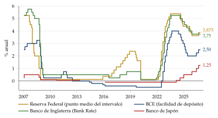
Fuente: Elaboración propia a partir de Federal Reserve Bank of New York (2026a) (punto medio del intervalo de los fondos federales), Banco Central Europeo (2026c) (facilidad de depósito), Bank of England (2026a) y Banco de Japón (2026); segunda comprobación con Banco de Pagos Internacionales (2026a). Datos mensuales hasta octubre de 2026. Banco de Japón: sin tipo objetivo de abril de 2013 a enero de 2016 (objetivo de base monetaria).
La lógica de las respuestas: lo que mueve el consumo y la inversión es el tipo a largo plazo, que es la media de los tipos cortos esperados más una prima por plazo:2 \[i^{(n)}_t=\frac{1}{n}\sum_{k=0}^{n-1}\mathbb{E}_t[i_{t+k}]+\text{prima por plazo}_t . \tag{2}\] Con el tipo corto en su límite, se puede actuar sobre los 2 sumandos:
sobre los tipos cortos esperados: con la orientación sobre los tipos futuros (forward guidance), la comunicación del banco central sobre la senda futura del tipo oficial, que promete tipos bajos durante más tiempo, y con los tipos negativos, que bajan todo el tramo corto;
sobre la prima por plazo: con las compras de activos a gran escala, la expansión cuantitativa (quantitative easing), compras de deuda pública y otros activos largos pagadas con reservas, que retiran duración del mercado, y con el control de la curva de tipos (yield curve control), que fija un tipo largo;
y, cuando el problema es el crédito, con préstamos a largo plazo a los bancos, condicionados a que presten.
Por qué funciona la orientación: el gasto depende de toda la senda esperada de tipos reales, no solo del tipo de hoy. En el límite inferior, la clave es gestionar las expectativas: un compromiso creíble de mantener los tipos bajos más allá del fin de la crisis reduce buena parte del coste del límite (gráfico 4):
entre \(t_0\) y \(T\) el tipo natural es negativo y el nominal está en cero, por encima de lo que la economía necesitaría;
sin orientación, el banco central sube el tipo en cuanto el tipo natural vuelve a ser positivo, en \(T\);
con orientación, promete mantenerlo en cero hasta \(T+1\) y tolerar entonces una expansión con algo de inflación; al anticiparla, los hogares esperan más inflación y más renta durante la crisis, y el tipo real baja sin que el nominal se mueva.
En la práctica: la Reserva Federal pasó de una orientación por fechas («al menos hasta mediados de 2013», en agosto de 2011) a una orientación condicionada en diciembre de 2012: tipos en el suelo al menos mientras el paro superase el 6,5 %.
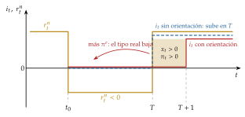
Fuente: Elaboración propia a partir de Eggertsson y Woodford (2003). El tipo natural es negativo entre \(t_0\) y \(T\); con orientación, el banco central mantiene el tipo en cero hasta \(T+1\) y tolera una expansión con inflación (\(x_t>0\), \(\pi_t>0\)), que, anticipada, baja el tipo real durante la crisis.
El catálogo y el diseño de estos instrumentos son de la política monetaria del banco central [ver tema 3.A.36]; sus canales de transmisión, [ver tema 3.A.37]. Aquí interesa cómo los usaron las 4 grandes economías (tabla 1).
| Instrumento | Reserva Federal | BCE | Banco de Inglaterra | Banco de Japón |
|---|---|---|---|---|
| Compras de activos | 2008-2014 y 2020-2022 | 2014-2022 (APP); 2020-2022 (PEPP) | 2009-2021 | 2001-2006; masivas desde 2013 |
| Orientación de la política | desde 2008 | desde 2013 | desde 2013 | desde 1999 |
| Tipos negativos | no | 2014-2022 | no | 2016-2024 |
| Préstamos condicionados | no | TLTRO, desde 2014 | Funding for Lending, desde 2012 | desde 2010 |
| Control de la curva | no | no | no | 2016-2024 |
Fuente: Elaboración propia a partir de Federal Open Market Committee (2009), Federal Open Market Committee (2010), Federal Open Market Committee (2012), Board of Governors of the Federal Reserve System (2020), Banco Central Europeo (2026a), Banco Central Europeo (2026d), Bank of England (2026b), Banco de Japón (2013), Banco de Japón (2016b) y Banco de Japón (2024). Compras netas; las reinversiones siguieron después (las del PEPP, hasta finales de 2024).
Las cifras:
la Reserva Federal compró bonos del Tesoro y titulizaciones hipotecarias en 3 rondas desde 2008, y en marzo de 2020 «en las cantidades necesarias»;
el BCE empezó a comprar deuda pública en marzo de 2015, a 60.000 millones de euros al mes, y en 2020 lanzó el programa de emergencia frente a la pandemia (PEPP), de hasta 1,85 billones;
el Banco de Inglaterra llegó a tener 895.000 millones de libras en bonos;
el Banco de Japón se propuso en 2013 duplicar la base monetaria en 2 años y en 2016 fijó el tipo a 10 años en torno al 0 %.
El balance como instrumento: desde mediados de 2007 hasta sus máximos de 2021, el activo de la Reserva Federal pasó del 6 % al 37 % del PIB; el del Eurosistema, del 13 % al 68 %; el del Banco de Inglaterra, del 5 % al 48 %, y el del Banco de Japón, del 18 % al 129 % (gráfico 5).

Fuente: Elaboración propia a partir de Banco de Pagos Internacionales (2026b) (activo total en porcentaje del PIB, fin de trimestre; Eurosistema hasta 2026T1 y los demás hasta 2026T2); segunda comprobación con el PIB de Comisión Europea (2026a) y el balance del Eurosistema (Banco Central Europeo, 2026b).
I.3. ¿Funcionó? Eficacia y costes
Una vez vistos los instrumentos, la pregunta que hace el título: ¿fueron eficaces?
Lo que funcionó:
los tipos a largo plazo bajaron: las primeras compras de la Reserva Federal redujeron la prima por plazo del bono a 10 años entre 30 y 100 puntos básicos; en la zona del euro, el Reino Unido y Japón las compras también bajaron los tipos largos, y la credibilidad del banco central resultó decisiva;
compensaron buena parte del límite: con un tipo neutral nominal del 2-3 %, la combinación de compras de activos y orientación equivale a unos 3 puntos más de recorte del tipo oficial;
apagaron crisis: el anuncio de las operaciones monetarias de compraventa del BCE (OMT) en 2012 bajó las primas de riesgo sin que llegara a comprar un solo bono (III.3).
Lo que funcionó menos:
rendimientos decrecientes: cuando los tipos largos ya están bajos, cada compra los baja menos, y el efecto llega antes a los precios de los activos que a la economía real;
Japón: con las expectativas de inflación ancladas cerca de cero durante 2 décadas, la expansión cuantitativa y cualitativa de 2013 subió la inflación, pero no la llevó de forma duradera al 2 %: Japón no «salió» de la deflación solo con la política monetaria;
el límite de la teoría: si el tipo neutral es aún más bajo, los instrumentos nuevos no bastan; hace falta un objetivo de inflación algo mayor o más política fiscal.
La inflación, el objetivo final, es donde peor salió: en la zona del euro la media anual estuvo entre el 0,2 y el 1,8 % de 2013 a 2019, por debajo del objetivo; en Japón, el gobernador del banco central admitía en 2016 que la economía ya no estaba en deflación, pero que el objetivo del 2 % «no se ha alcanzado todavía».
Los costes:
pérdidas de los bancos centrales: compraron bonos largos a tipo fijo pagados con reservas que se remuneran al tipo oficial; cuando los tipos subieron en 2022-2023, el coste de las reservas superó el rendimiento de los bonos. El BCE perdió 7.944 millones de euros en 2024;
distribución: suben los precios de la vivienda y de las acciones, que tienen sobre todo los hogares más ricos, aunque el empleo que sostienen beneficia más a los demás;
estabilidad financiera: con tipos bajos durante años se busca rentabilidad asumiendo más riesgo y crece la deuda privada. La crisis de 2008 fue el «momento Minsky», en el que un auge de crédito acaba en crisis, y reabrió el debate entre frenar las burbujas con los tipos (leaning) o limpiar después (cleaning) [ver tema 3.A.42]; la primera línea de defensa es la regulación macroprudencial [ver tema 3.B.27];
la frontera con la política fiscal: al comprar deuda pública a gran escala, el banco central abarata la financiación del Estado y sus resultados acaban en el presupuesto. La política monetaria se acerca a la fiscal, y su independencia exige que suba los tipos cuando toque, aunque encarezca la deuda.
La normalización (2022-2026): con la inflación, los bancos centrales dejaron de comprar y empezaron a reducir sus balances: el Banco de Inglaterra, desde 2022; el BCE dejó de reinvertir el APP en 2023 y el PEPP a finales de 2024, y la Reserva Federal terminó la reducción el 1 de diciembre de 2025. A mediados de 2026, los balances eran el 21, el 39, el 26 y el 94 % del PIB: mucho mayores que en 2007.
La evidencia sobre los instrumentos nuevos (los métodos, en el anexo C):
Estudios de eventos: los 8 anuncios de compras de la Reserva Federal de 2008-2009 bajaron en total 91 puntos básicos el rendimiento del bono a 10 años; los de la segunda ronda, en 2010, ya anticipados, unos 18 el día del anuncio. Estos autores apenas encuentran efecto por el canal de la duración y sí por la señal, la escasez de activos seguros y la inflación esperada: comprar titulizaciones hipotecarias baja más los tipos de las hipotecas que comprar deuda pública.
Reino Unido: las compras de 200.000 millones de libras hasta febrero de 2010, casi todas de deuda pública, bajaron su rendimiento unos 100 puntos básicos, sobre todo por la recomposición de las carteras.
Zona del euro: sin las medidas no convencionales de 2014-2018, el PIB habría sido en torno a un 2,7 % menor a finales de 2018.
Con identificación de alta frecuencia, la orientación y las compras movieron los mercados tanto como el tipo oficial en tiempos normales, y con efectos persistentes.
Recapitulación del bloque: el tipo natural cayó y la política monetaria tocó su límite; los instrumentos nuevos funcionaron, sobre todo para bajar los tipos largos y frenar las crisis de deuda, pero con menos fuerza y más costes que el tipo oficial. La política monetaria necesitaba ayuda, y la ayuda solo podía venir de la política fiscal: ¿cuánto vale un euro de gasto?
II. La efectividad de la política fiscal: el valor de los multiplicadores
Una vez vista la política monetaria, pasamos a la fiscal, que tomó el relevo. Su eficacia se mide con el multiplicador: veremos cómo se define, qué predice cada escuela y qué dicen los datos.
Conclusión anticipada: el multiplicador no es un número fijo. La teoría da valores de menos de 1 a más de 2 según los precios, los hogares y, sobre todo, la respuesta del banco central; los datos sitúan el del gasto entre 0,6 y 1 en tiempos normales y por encima de 1 cuando la política monetaria acompaña. Es pequeño cuando el banco central compensa y grande en una recesión profunda con los tipos en su límite.
II.1. Qué es y cómo se mide el multiplicador
Por instrumento: hay un multiplicador por instrumento: el del gasto (consumo o inversión pública), el de las transferencias y el de los impuestos (negativo: una subida resta producción).
Por horizonte: como el gasto y la producción responden durante varios periodos, se distinguen 4 medidas:3
el de impacto, \(m^{\,t}_t=\Delta Y_t/\Delta G_t\), en el periodo del gasto;
el a \(k\) periodos, \(m^{\,t+k}_t=\Delta Y_{t+k}/\Delta G_t\), la respuesta de la producción en \(t+k\) al gasto de \(t\);
el máximo, \(m^{\max}=\max_k m^{\,t+k}_t\), el pico de esa respuesta;
el acumulado, que divide la producción acumulada entre el gasto acumulado:4
\[m^{\mathrm{acum}}_{t,k}=\frac{\sum_{j=0}^{k}\Delta Y_{t+j}}{\sum_{j=0}^{k}\Delta G_{t+j}}\tag{3}\]
Interpretación: con un multiplicador acumulado de 1, cada euro de gasto público añade un euro de PIB y deja igual el gasto privado; por encima de 1, lo arrastra; por debajo, lo expulsa en parte.
Interpretación gráfica (gráfico 6): la respuesta del PIB a un aumento del gasto suele tener forma de joroba. El de impacto es el primer punto; el máximo, la cima; el acumulado compara las áreas bajo las 2 curvas. Es la medida que prefiere la literatura, porque el gasto también responde durante varios periodos.
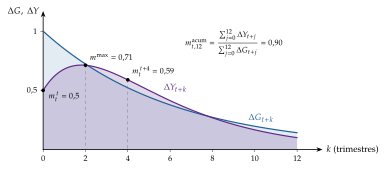
Fuente: Elaboración propia con una respuesta ilustrativa. El gasto sube en 1 y vuelve poco a poco; la producción sube 0,5 en el impacto, llega a un máximo de 0,71 al cabo de 2 trimestres y el multiplicador acumulado a 12 trimestres es 0,9.
II.2. De qué depende: la teoría
Una vez definido el multiplicador, veamos qué valor le da cada escuela. Los modelos forman una secuencia: cada uno añade una pieza al anterior (las expectativas, la rigidez de los precios y la respuesta del banco central, la heterogeneidad de los hogares).
Dicho: «todo es según el color del cristal con que se mira», como escribió Campoamor. El valor del multiplicador depende del modelo con que se mire y, en la realidad, de las circunstancias (tabla 2).
II.2.1. El multiplicador keynesiano
a) Idea
Con precios fijos y recursos ociosos, la producción se ajusta a la demanda. Un euro de gasto público es renta para alguien, que gasta una parte, que es renta para otro… La idea es de Kahn (1931) para el empleo, y Keynes (1936, cap. 10) la convirtió en el multiplicador de la inversión [ver tema 3.A.4].
b) Modelo
i) Supuestos
Precios y salarios rígidos, paro involuntario y consumo \(C=\overline{C}+c\,Y^d\), con propensión marginal \(c\in(0,1)\) e impuestos proporcionales al tipo \(t\).
En un primer paso, el tipo de interés está dado; en un segundo paso, lo determina el mercado de dinero (modelo IS-LM).
ii) Desarrollo
Con el tipo de interés dado, en la cruz keynesiana (gráfico 7, la misma que en otro tema [ver tema 3.A.4]), el gasto se multiplica por la suma de las rondas sucesivas de consumo, y cada ronda se filtra en impuestos, ahorro e importaciones:
\[\frac{\Delta Y^*}{\Delta\overline{G}}=\frac{1}{1-c\,(1-t)+m}>1\tag{4}\]
con \(m\) la propensión marginal a importar (\(m=0\) en economía cerrada, y \(1/(1-c)\) si además los impuestos son de cuantía fija).
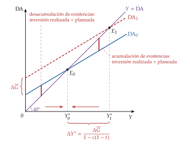
Fuente: Elaboración propia a partir de Keynes (1936, caps. 3 y 10). Con una propensión a consumir de 0,6, el gasto sube en 1,6 y la producción, en 4: el multiplicador es 2,5.
Con el tipo de interés endógeno (modelo IS-LM), la mayor renta eleva la demanda de dinero y el tipo de interés, que expulsa parte de la inversión:5 \[\frac{\partial Y^*}{\partial\overline{G}}=\frac{1}{1-c\,(1-t)+b\,k/h}<\frac{1}{1-c\,(1-t)}. \tag{5}\] Cuanto más plana la LM (\(h\) grande) y más vertical la IS (\(b\) pequeño), menor es la expulsión: de ahí el debate entre keynesianos y monetaristas, que va de una expulsión casi nula a una casi total (gráfico 8, la misma que en otro tema [ver tema 3.A.39]) [ver tema 3.A.5].
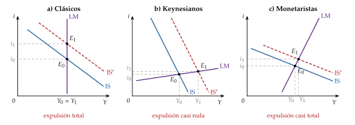
Fuente: Elaboración propia a partir de Heijdra (2017). a) Clásicos: LM vertical, expulsión total. b) Keynesianos: LM plana, expulsión casi nula. c) Monetaristas: LM inclinada e IS plana, expulsión casi total.
iii) Implicaciones
El multiplicador es mayor que 1, y mayor cuanto mayor la propensión a consumir y menores los impuestos, las importaciones y la expulsión.
La política monetaria importa: si el banco central mantiene el tipo de interés, la LM se desplaza con la IS y el multiplicador vuelve al de la cruz. Es la primera forma de la interrelación (III).
La financiación importa: con impuestos de cuantía fija, un gasto financiado con impuestos tiene un multiplicador de 1 en la cruz, el del presupuesto equilibrado, «sea cual sea la propensión marginal a consumir»; financiado con deuda es mayor, porque no resta renta disponible.
Haavelmo exige que el tipo no se mueva: en el modelo IS-LM, el multiplicador del presupuesto equilibrado es \((1-c)/(1-c+bk/h)<1\), porque la subida del tipo de interés también expulsa inversión; solo vale 1 con la LM horizontal, en la trampa de la liquidez.
c) Evidencia empírica
Keynes calculó, con los datos de Kuznets para Estados Unidos, un multiplicador «menor que 3 y probablemente bastante estable en torno a 2,5», y advirtió que en una economía abierta con subsidio de paro podría bajar «a 2 o 3». Desconfiaba de los datos, que eran los primeros de contabilidad nacional.
d) Valoración
El modelo no tiene expectativas: los hogares no miran los impuestos futuros ni su renta permanente, y sus parámetros cambian con la política (la crítica de Lucas) [ver tema 3.A.6]. Es lo que corrigen los modelos siguientes.
II.2.2. El ciclo real: el efecto riqueza
a) Idea
En el modelo del ciclo real, con precios flexibles, expectativas racionales y hogares que optimizan a lo largo de su vida [ver tema 3.A.42] [ver tema 3.A.38], el gasto público no crea demanda: detrae recursos. Si eleva la producción, es por la oferta de trabajo.
b) Modelo
i) Supuestos
Un hogar representativo que elige consumo y trabajo, empresas competitivas y un gasto financiado con impuestos de cuantía fija, presentes o futuros. Se cumple la equivalencia ricardiana: da igual financiar el gasto con impuestos o con deuda [ver tema 3.A.39].
ii) Desarrollo
Un aumento del gasto obliga a pagar más impuestos, hoy o mañana: el hogar es más pobre. Ese efecto riqueza negativo reduce el consumo y el ocio: el hogar trabaja más, el salario real baja y la producción sube.
La versión estática más sencilla: el hogar obtiene utilidad del consumo, \(u(C)\), y desutilidad de producir, \(v(Y)\), con \(C=Y-G\). En el óptimo, la utilidad marginal del consumo iguala la desutilidad marginal de producir, \(u'(Y-G)=v'(Y)\), y diferenciando (anexo A):
\[\frac{dY}{dG}=\Gamma\equiv\frac{\eta_u}{\eta_u+\eta_v}\in(0,1)\tag{6}\]
donde \(\eta_u\) y \(\eta_v\) son las elasticidades (en valor absoluto) de la utilidad marginal del consumo y de la desutilidad marginal de producir. La producción sube, pero menos que el gasto, porque el consumo cae: el multiplicador es positivo y menor que 1.
El efecto depende de la persistencia del gasto:
si es transitorio, la riqueza apenas cambia: el multiplicador es positivo, pero pequeño y menor que 1, y el consumo y la inversión privada caen;
si es permanente, el efecto riqueza es grande, el empleo sube mucho y, con la acumulación de capital, el multiplicador puede superar 1.
iii) Implicaciones
La política fiscal no sirve para estabilizar: el gasto se decide por su utilidad, no por el ciclo, y una rebaja de impuestos financiada con deuda no tiene efecto.
Si el gasto es productivo (infraestructuras, educación), puede elevar la producción y el crecimiento a largo plazo [ver tema 3.A.38].
c) Evidencia empírica
Calibrado: en el modelo de Baxter y King (1993), con impuestos de cuantía fija, un aumento permanente del gasto tiene un multiplicador algo menor que 1 a corto plazo y en torno a 1,2 a largo plazo, porque estimula la acumulación de capital; financiado con impuestos distorsionantes, puede ser negativo.
En los datos, en cambio, el consumo privado no cae con el gasto público: sube o se queda igual.
d) Valoración
El modelo explica por qué el gasto puede subir la producción sin crear demanda, pero no reproduce la respuesta del consumo. Hacen falta precios rígidos y hogares que no puedan endeudarse, las 2 piezas que añaden los modelos siguientes.
II.2.3. El modelo neokeynesiano: el multiplicador depende del banco central
a) Idea
El modelo neokeynesiano canónico [ver tema 3.A.7] conserva el efecto riqueza del ciclo real y añade la rigidez de precios y un banco central que fija el tipo de interés. La pregunta deja de ser «¿cuánto vale el multiplicador?» y pasa a ser «¿qué hace el banco central cuando sube el gasto?».
b) Modelo
i) Supuestos
Las 3 ecuaciones del modelo canónico, en logaritmos y en desviaciones del estado estacionario, con la brecha \(x_t\equiv y_t-y^n_t\):
la IS dinámica, \(x_t=\mathbb{E}_t[x_{t+1}]-\frac{1}{\theta}\left(i_t-\mathbb{E}_t[\pi_{t+1}]-r^n_t\right)\), con \(\theta\) la inversa de la elasticidad de sustitución intertemporal;
la curva de Phillips neokeynesiana, \(\pi_t=\beta\,\mathbb{E}_t[\pi_{t+1}]+\kappa\,x_t\);
una regla de política monetaria, que es lo que cambia de un caso a otro.
El gasto público, \(\hat g_t\equiv(G_t-\overline{G})/\overline{Y}\), entra como una perturbación de demanda más, de 2 formas:6
eleva la producción natural por el efecto riqueza: \(y^n_t=\Gamma\,\hat g_t\), con \(\Gamma\equiv\theta/(\theta+\varphi)\in(0,1)\), donde \(\varphi\) es la inversa de la elasticidad de Frisch;
eleva el tipo natural mientras dura: \(r^n_t=\rho+\theta(1-\Gamma)\left(\hat g_t-\mathbb{E}_t[\hat g_{t+1}]\right)\).
ii) Desarrollo
Un aumento del gasto actúa por 3 vías, como en el modelo canónico [ver tema 3.A.7]:
el efecto riqueza: los hogares anticipan los impuestos futuros, consumen menos y trabajan más;
la rigidez de precios: las empresas atienden la mayor demanda con más producción y empleo, y el margen cae;
la respuesta del banco central, de la que depende el resultado.
El multiplicador según la respuesta del banco central (derivación en el anexo A):
con precios flexibles, es \(\Gamma<1\), como en el ciclo real, y el consumo cae;
si el banco central mantiene el tipo real, es exactamente 1: el consumo no se mueve;
con una regla de Taylor (\(i_t=\rho+\phi_\pi\pi_t\), \(\phi_\pi>1\)), el banco central sube el tipo real y el multiplicador queda entre \(\Gamma\) y 1: más bajo cuanto más agresiva la regla y más flexibles los precios. Con valores habituales y un gasto persistente, en torno a 0,87;
con los tipos en el límite inferior, el tipo nominal no sube, el gasto eleva la inflación esperada y baja el tipo real: el multiplicador supera 1 (III.2).
El resultado clave: con la regla de Taylor y un gasto que se mantiene cada periodo con probabilidad \(\rho_g\), el multiplicador es una media ponderada de 1 y de \(\Gamma\):
\[m=\frac{1+\Omega\,\Gamma}{1+\Omega},\qquad \Omega\equiv\frac{\kappa\,(\phi_\pi-\rho_g)}{\theta\,(1-\rho_g)(1-\beta\rho_g)}>0\tag{7}\]
Cuanto más agresiva la regla (\(\phi_\pi\) mayor) y más flexibles los precios (\(\kappa\) mayor), mayor es \(\Omega\) y más se acerca el multiplicador al neoclásico, \(\Gamma\), porque el banco central neutraliza el estímulo; con un banco central que no reacciona, \(\Omega=0\) y el multiplicador es 1.
Interpretación gráfica (gráfico 9): en el plano de la producción y el tipo real, el gasto desplaza la IS hacia la derecha en \(\Delta g\):
si el banco central mantiene el tipo real, el equilibrio pasa de \(E_0\) a \(E_1\) y la producción sube tanto como el desplazamiento: el multiplicador es 1;
con la regla de Taylor, el tipo real sube con la producción, el equilibrio se queda en \(E_1'\) y el avance es menor: el multiplicador es menor que 1;
en el límite inferior (panel b), el tipo real tiene un suelo, \(i^{\mathrm{ELB}}-\pi^e\); el gasto sube la inflación esperada y baja el suelo, y la producción avanza más que el desplazamiento: el multiplicador es mayor que 1 (III.2.1).
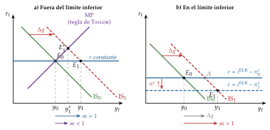
Fuente: Elaboración propia a partir de Woodford (2011). a) Con el tipo real constante, \(\Delta y=\Delta g\) (\(m=1\)); con una regla de Taylor (MP), \(\Delta y<\Delta g\) (\(m<1\)). b) En el límite inferior, el gasto sube la inflación esperada y baja el suelo del tipo real: \(\Delta y>\Delta g\) (\(m>1\)); \(A\) es donde llegaría la economía si el suelo no se moviera.
iii) Implicaciones
El multiplicador es mayor cuanto más rígidos los precios, más persistente el gasto y más acomodaticio el banco central. Con un banco central que neutraliza la demanda, el gasto público sirve de poco para estabilizar: el multiplicador es menor que 1 y el consumo cae.
Una rebaja de impuestos financiada con deuda sigue sin efecto si los hogares son ricardianos; el gasto sí mueve la demanda.
c) Evidencia empírica
En modelos neokeynesianos estimados, con una regla de Taylor, el multiplicador ronda 1: 1,05 en el modelo básico de Christiano, Eichenbaum y Rebelo (2011), que advierten de que con parámetros razonables es difícil que pase de 1,2.
d) Valoración
El modelo predice que el consumo cae cuando sube el gasto, salvo con un banco central muy acomodaticio; en los datos no cae. Falta una pieza: los hogares que no pueden ahorrar ni endeudarse.
II.2.4. Hogares que viven al día y agentes heterogéneos
a) Idea
Muchos hogares no pueden endeudarse ni tienen ahorro líquido, y gastan lo que ingresan. Si es así, el gasto público que eleva su renta eleva también su consumo, y el multiplicador es mayor que en los modelos de agente representativo.
b) Modelo
i) Supuestos
Con 2 tipos de hogares: una fracción \(\lambda\), de regla de pulgar (rule of thumb), consume su renta corriente; el resto es ricardiano y suaviza su consumo. Precios rígidos, como en el modelo neokeynesiano.
Con agentes heterogéneos (modelos neokeynesianos con agentes heterogéneos, heterogeneous agent New Keynesian, HANK): muchos hogares, con riesgos de renta no asegurables y restricciones de liquidez, y cada uno con su propensión marginal a consumir.
ii) Desarrollo
Con 2 tipos de hogares: el gasto eleva el empleo y el salario real, y el consumo de los hogares de regla de pulgar sube. Si su fracción supera aproximadamente una cuarta parte y los salarios no se fijan de forma competitiva, el consumo agregado aumenta con el gasto, como en los datos, y la equivalencia ricardiana deja de cumplirse.
Con agentes heterogéneos: lo que importa es la propensión marginal a consumir de cada hogar y cómo se reparte en el tiempo. En estos modelos, la propensión trimestral media es del 15-20 %, frente a menos del 1 % del agente representativo, y el gasto financiado con deuda tiene efectos mucho mayores. Auclert, Rognlie y Straub (2024) lo resumen en la cruz keynesiana intertemporal, que generaliza la cruz a muchos periodos: con las propensiones a consumir que se observan en los datos, un gasto financiado con deuda tiene un multiplicador acumulado mayor que 1.
iii) Implicaciones
Importa a quién llega el dinero: las transferencias a hogares con restricciones de liquidez multiplican mucho más que las generales: en los modelos de los bancos centrales, hasta 2 frente a 0,2-0,6.
Importa cómo se financia: con deuda, el gasto multiplica más que con impuestos, porque los hogares que viven al día no anticipan los impuestos futuros.
La política fiscal y la monetaria se mezclan, porque las 2 actúan sobre la renta de los hogares [ver tema 3.A.37].
c) Evidencia empírica
Campbell y Mankiw (1989) estiman que en torno a la mitad de la renta va a hogares que consumen su renta corriente [ver tema 3.A.33], y también viven al día muchos hogares con riqueza ilíquida, como la vivienda.
d) Valoración
Los modelos con hogares heterogéneos reproducen la respuesta del consumo que los anteriores no reproducían, pero su multiplicador depende de supuestos difíciles de medir: la distribución de la riqueza líquida, la financiación y, de nuevo, la respuesta del banco central.
| Modelo | Qué lo determina | Multiplicador |
|---|---|---|
| Keynesiano, tipo dado | propensiones a consumir y a importar, impuestos | mayor que 1 |
| IS-LM | además, la expulsión por el tipo de interés | de 0 (LM vertical) a lo de la cruz |
| Ciclo real | efecto riqueza; persistencia del gasto | menor que 1 si es transitorio; puede superar 1 si es permanente |
| Neokeynesiano, regla de Taylor | rigidez de precios; agresividad de la regla | entre \(\Gamma\) y 1 (0,87 en el ejemplo) |
| Neokeynesiano, límite inferior | duración del límite; flexibilidad de precios | mayor que 1, creciente con la duración |
| Hogares que viven al día y HANK | propensiones a consumir; a quién llega el gasto | mayor; mayor que 1 con deuda |
Fuente: Elaboración propia a partir de Keynes (1936), Baxter y King (1993), Woodford (2011), Galí, López-Salido y Vallés (2007) y Auclert, Rognlie y Straub (2024). En verde, multiplicador mayor que 1; en dorado, menor que 1.
Recapitulación de la teoría: el multiplicador va de menos de 1 (precios flexibles o un banco central que compensa) a más de 2 (límite inferior), y lo deciden la respuesta del banco central, la persistencia del gasto y a quién llega. Toca ver qué dicen los datos.
II.3. Qué dicen los datos
II.3.1. El problema y los métodos
El problema de identificación: el gasto y los impuestos responden al ciclo (los estabilizadores automáticos, los planes de estímulo en las recesiones), igual que el banco central baja los tipos cuando la economía se debilita. Comparar sin más el gasto y el PIB mezcla el efecto de la política sobre la economía con el de la economía sobre la política.
La anticipación: un aumento del gasto se debate y se aprueba meses antes de ejecutarse; cuando aparece en los datos, los hogares ya han reaccionado. Los pronósticos profesionales y las series narrativas se adelantan a las perturbaciones de gasto que identifican los VAR: por eso los VAR encontraban que el gasto subía el consumo y los salarios reales, y las series narrativas, lo contrario.
Los métodos (detalle en el anexo C):
los vectores autorregresivos estructurales: O. J. Blanchard y Perotti (2002) suponen que el gasto no reacciona al PIB dentro del mismo trimestre (las decisiones tardan) y descuentan la respuesta automática de los impuestos;
el método narrativo: se buscan en los documentos cambios no motivados por el ciclo, como los cambios de impuestos por razones de largo plazo o las noticias de gasto militar;
las proyecciones locales (local projections), que estiman la respuesta a cada horizonte y permiten que dependa del estado de la economía;
los multiplicadores locales, que comparan regiones que reciben más o menos gasto federal: miden un multiplicador relativo, con la misma política monetaria y los mismos impuestos para todos, que no es el nacional;
los modelos estimados, como los de los bancos centrales y el FMI.
II.3.2. Lo que dicen los datos
La cifra de síntesis: la mayoría de las estimaciones del multiplicador medio del gasto están entre 0,6 y 1, y las de los cambios de impuestos, entre 2 y 3 en valor absoluto; por encima de 1 solo salen con una política monetaria acomodaticia (tabla 3).
Las demás síntesis coinciden: en Estados Unidos, la mayoría de las estimaciones del gasto están entre 0,6 y 1,5; un metaanálisis de 104 estudios sitúa el multiplicador del gasto cerca de 1, el de la inversión pública algo por encima y el de los impuestos y las transferencias algo por debajo.
Las 2 cifras de Ramey no son incoherentes: el gasto que se estudia es en buena parte transitorio, mientras que los cambios de impuestos suelen ser permanentes y cambian los incentivos a trabajar e invertir.
| Método | Estudio | Multiplicador |
|---|---|---|
| VAR estructural, gasto | O. J. Blanchard y Perotti (2002), actualizado | 0,6 a 0,8 |
| Narrativo, gasto militar | Ramey y Zubairy (2018) | 0,6 a 0,8 |
| Narrativo, impuestos | Romer y Romer (2010) | \(-2{,}5\) a \(-3\) |
| Según el estado del ciclo | Auerbach y Gorodnichenko (2012) | 2,2 en recesión; \(-0{,}3\) en expansión |
| Con datos de Estados Unidos desde 1889 | Ramey y Zubairy (2018) | menor que 1, con o sin holgura |
| Regiones de una unión monetaria | Nakamura y Steinsson (2014) | en torno a 1,5 (relativo) |
| Modelos de bancos centrales | Coenen et al. (2012) | 0,7 a 1; de 1,2 a 2,2 con 2 años de acomodación |
| Metaanálisis de 104 estudios | Gechert (2015) | gasto, cerca de 1; inversión, algo más; impuestos y transferencias, algo menos |
| Japón, en el límite inferior | Miyamoto, Nguyen y Sergeyev (2018) | 1,5 en el impacto (0,6 fuera del límite) |
| España, en crisis y en calma | Hernández de Cos y Moral-Benito (2013) | 1,4 en crisis; 0,6 en calma |
Fuente: Elaboración propia a partir de Ramey (2019, tablas 1 y 2), que recoge las cifras de cada estudio (multiplicadores acumulados; el de Blanchard y Perotti, actualizado con datos de 1947 a 2015); las 3 últimas filas, de cada estudio (en Japón, multiplicador de impacto).
II.3.3. Los determinantes del multiplicador
La literatura coincide en qué lo hace mayor o menor, aunque discrepa en cuánto (tabla 4). 3 resultados merecen detalle:
el estado del ciclo: Auerbach y Gorodnichenko (2012) encuentran multiplicadores mucho mayores en las recesiones, pero el resultado es frágil: con un siglo de datos de Estados Unidos y el multiplicador acumulado, Ramey y Zubairy (2018) no hallan esa diferencia. La discrepancia viene sobre todo de un supuesto: el multiplicador de las recesiones se calculaba como si la economía siguiera en recesión 5 años, cuando las recesiones duran unos pocos trimestres;
la política monetaria: es el determinante más sólido. Cuando acompaña, o con los tipos en el límite inferior, las estimaciones superan 1: hasta 1,5 en Estados Unidos y de 1,5 a 2,5 en Japón. En Japón, con los tipos cerca de cero desde finales de los 90, el multiplicador de impacto es de 1,5 en el límite, frente a 0,6 fuera de él;
la apertura, el tipo de cambio y la deuda: con tipo de cambio flexible el multiplicador es casi nulo, porque la moneda se aprecia y el banco central sube los tipos; con tipo fijo es positivo; en las economías muy abiertas, menor, y en los países con una deuda superior al 60 % del PIB, nulo en el impacto y negativo a largo plazo.
En España, con datos hasta la crisis de la deuda, el multiplicador del gasto es de 1,4 en tiempos de crisis y de 0,6 en tiempos tranquilos; la debilidad de las finanzas públicas lo reduce y puede hacerlo negativo.
| Determinante | Mayor multiplicador si… | Referencia |
|---|---|---|
| Política monetaria | acompaña: tipos fijos o en el límite inferior | Christiano, Eichenbaum y Rebelo (2011); Woodford (2011) |
| Instrumento | gasto, sobre todo inversión, y transferencias a hogares con restricciones, mejor que rebajas generales de impuestos | Coenen et al. (2012); Ramey (2019) |
| Hogares | muchos viven al día | Galí, López-Salido y Vallés (2007) |
| Persistencia y anticipación | transitorio en la demanda; permanente en la oferta; los anuncios actúan antes que el gasto | Baxter y King (1993); Ramey (2011b) |
| Estado del ciclo | recesión (resultado frágil) | Auerbach y Gorodnichenko (2012); Ramey y Zubairy (2018) |
| Apertura y tipo de cambio | economía cerrada, tipo de cambio fijo | Ilzetzki, Mendoza y Végh (2013) |
| Deuda pública | baja; con deuda alta, nulo o negativo | Ilzetzki, Mendoza y Végh (2013) |
| Financiación | con deuda, si los hogares no son ricardianos | Haavelmo (1945); Barro (1974) |
Fuente: Elaboración propia a partir de las referencias de la tabla. En verde, resultados sólidos; en dorado, condicionados; en rojo, el que puede cambiar el signo.
II.3.4. La prueba de la austeridad: el error de los multiplicadores
La pregunta: entre 2010 y 2013 casi toda Europa consolidó sus cuentas a la vez, con los tipos cerca de su límite. ¿Fue mayor el coste en producción de lo que se esperaba?
El método: comparan, en 26 economías europeas, el error de previsión del crecimiento de 2010-2011 con la consolidación fiscal que se preveía en la primavera de 2010. Si las previsiones hubieran usado el multiplicador correcto, el error no tendría que depender de la consolidación.
El resultado (gráfico 10): la pendiente es de \(-1{,}095\). Por cada punto del PIB de consolidación prevista, el crecimiento fue en torno a un punto menor de lo previsto: los multiplicadores, que las previsiones suponían en torno a 0,5, fueron casi un punto mayores, muy superiores a 1 al principio de la crisis. Es el mea culpa del FMI del enganche: los multiplicadores observados estaban entre 0,9 y 1,7.
La austeridad expansiva no apareció: la austeridad expansiva es la hipótesis de que una consolidación creíble puede elevar la producción incluso a corto plazo, porque mejora la confianza, rebaja los impuestos esperados y baja las primas de riesgo [ver tema 3.A.39]:
su origen son Dinamarca e Irlanda en los 80, pero esos ajustes vinieron precedidos de una devaluación y acompañados de una fuerte caída de los tipos, 2 condiciones que no tenía la zona del euro de 2010, con los tipos en el suelo y sin moneda propia;
medidas con el método narrativo, las consolidaciones son contractivas: la medida habitual, el saldo ajustado del ciclo, sesga los resultados hacia el efecto expansivo;
importa la composición: los planes basados en subidas de impuestos son mucho más recesivos que los basados en recortes del gasto, aunque el multiplicador de los recortes del gasto puede ser mayor que el de los aumentos.
El matiz: con otros datos, los multiplicadores de las consolidaciones europeas no fueron mayores que los normales; el error estaba sobre todo en lo bajos que eran los supuestos. El ajuste se hizo, en cualquier caso, en el peor momento: con la política monetaria sin margen para compensarlo.
¿Pudo la consolidación subir la deuda? Para que la ratio de deuda fuera mayor al cabo de 5 años, el multiplicador tendría que ser claramente superior a 1, y cercano a 3 para que lo fuera a los 10 años; con multiplicadores de 0,8 a 1,3, el ajuste empeora la ratio al principio, pero la reduce en pocos años. Con algo de histéresis, en cambio, el daño en la producción persiste años y el ajuste pudo acabar subiendo la deuda.
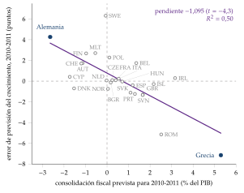
Fuente: Elaboración propia con los datos de replicación de O. J. Blanchard y Leigh (2013b): 26 economías europeas; consolidación prevista en el WEO de primavera de 2010 y error de previsión del crecimiento acumulado de 2010-2011. Recta de regresión: pendiente \(-1{,}095\), \(R^2=0{,}50\).
Recapitulación del bloque: el multiplicador del gasto vale entre 0,6 y 1 en tiempos normales y más cuando la política monetaria acompaña; menos en las economías abiertas, con tipo de cambio flexible o con deuda alta. La teoría y los datos coinciden en lo esencial: el multiplicador depende de lo que haga el banco central. Por eso el último bloque estudia las 2 políticas juntas.
III. La interrelación de las políticas desde 2008
Hemos visto que la política monetaria, en su límite, necesitaba a la fiscal, y que el multiplicador fiscal depende del banco central. Pasamos a estudiar las 2 políticas juntas: el marco para combinarlas, el multiplicador según la política monetaria y la experiencia de las principales economías desde 2008.
Conclusión anticipada: las 2 políticas son más eficaces juntas, pero sin que una se ponga al servicio de la otra. El gasto multiplica más cuando el banco central lo acompaña, y el banco central solo puede ser independiente si la política fiscal es sostenible. Desde 2008 la combinación fue coherente en las recesiones de 2009 y 2020, y se tensionó en la austeridad de 2010-2013 y en la inflación de 2022.
III.1. El marco: combinación de políticas y dominación
III.1.1. La combinación de políticas
Los 4 cuadrantes: con el tono de cada política definido en la introducción (el monetario por \(r_t\) frente a \(r^n\); el fiscal por el impulso, \(-\Delta b^{pe}\)), hay 4 combinaciones (gráfico 11):
las 2 expansivas: en una recesión con inflación baja, como en 2009 y en 2020;
las 2 contractivas: con la economía sobrecalentada y la inflación alta, como en 2022-2023;
fiscal expansiva y monetaria contractiva: sube los tipos de interés y aprecia la moneda, como en Estados Unidos a principios de los 80 o en el Reino Unido en 2022;
fiscal contractiva y monetaria expansiva: la combinación clásica para consolidar con deuda alta sin hundir la demanda, como en la zona del euro desde 2012.
Coherente no significa del mismo signo: una combinación es coherente si cada política ayuda a los objetivos de la otra según la situación (inflación, brecha y deuda). En los datos, el giro fue rápido: según el FMI, en 2020 el 77 % de las economías combinó políticas monetaria y fiscal expansivas; en 2021, el 62 %, una monetaria expansiva con una fiscal contractiva, y en 2022 el 74 % aplicó las 2 contractivas.
Dicho: «juntos, pero no revueltos». Las 2 políticas deben ir en la misma dirección cuando la economía lo pide, pero cada una con su mandato y su responsable.
Fuente: Elaboración propia. Ambas expansivas: 2009 y 2020; ambas contractivas: 2022-2023; fiscal expansiva y monetaria contractiva: Estados Unidos en los 80 y el Reino Unido en 2022; fiscal contractiva y monetaria expansiva: la zona del euro desde 2012. Coherente no significa del mismo signo.
III.1.2. Dominación monetaria y dominación fiscal
a) Idea
Las 2 políticas comparten una restricción: el Tesoro emite la deuda y el banco central fija su coste y puede comprarla. La pregunta clásica es quién manda: quién se ajusta para que la deuda se pague [ver tema 3.A.39].
b) Modelo
i) Supuestos
Cada autoridad puede ser activa, si fija su instrumento sin mirar la deuda, o pasiva, si se ajusta a lo que decide la otra y a la deuda heredada:
la monetaria es activa si sube el tipo más que la inflación (el principio de Taylor);
la fiscal es pasiva si sube los superávits lo bastante para pagar al menos los intereses de la deuda adicional.
ii) Desarrollo
La condición de equilibrio: el valor real de la deuda nominal heredada, \(B_{t-1}\), tiene que igualar el valor actual de los superávits primarios reales futuros, \(s_{t+j}\), que la respaldan:
\[\frac{B_{t-1}}{P_t}=\mathbb{E}_t\sum_{j=0}^{\infty}\beta^{j}\,s_{t+j}\tag{8}\]
Si la autoridad fiscal no ajusta los superávits, la igualdad solo puede cumplirse si se ajusta el nivel de precios, \(P_t\) (anexo B).
Los 4 regímenes (tabla 5): solo dan un equilibrio único los que combinan una autoridad activa y otra pasiva:
con dominación monetaria (monetary dominance), el banco central fija la inflación y los superávits estabilizan la deuda: es el régimen de la Gran Moderación;
con dominación fiscal (fiscal dominance), los superávits están dados y se ajusta la política monetaria: con señoreaje, como en la aritmética monetarista desagradable de Sargent y Wallace (1981), o con el nivel de precios, que reduce el valor real de la deuda hasta el respaldo fiscal esperado, como en la teoría fiscal del nivel de precios (fiscal theory of the price level).
| Política fiscal pasiva (ajusta los superávits) |
Política fiscal activa (superávits exógenos) |
|
|---|---|---|
| Política monetaria activa (principio de Taylor) |
Dominación monetaria el banco central fija la inflación y los superávits estabilizan la deuda |
Sin equilibrio estable nadie cede y la deuda es explosiva |
| Política monetaria pasiva (acomoda) |
Indeterminación equilibrios múltiples del nivel de precios |
Dominación fiscal el nivel de precios se ajusta para respaldar la deuda |
Fuente: Elaboración propia a partir de Leeper (1991) y Leeper y Leith (2016).
iii) Implicaciones
El multiplicador depende del régimen: con dominación monetaria, el gasto anuncia impuestos futuros y el banco central sube el tipo real; con dominación fiscal, el gasto no se respalda con impuestos, sube la inflación, baja el tipo real y estimula el consumo, y el multiplicador es mayor (III.2).
La inflación puede ser un fenómeno fiscal: la noticia de menores superávits futuros sube el nivel de precios, aunque el banco central no cree dinero.
c) Extensiones
La financiación monetaria del déficit (el «dinero helicóptero», helicopter money), un gasto o una rebaja de impuestos financiados de forma permanente con dinero, es la forma extrema de coordinación: con precios rígidos estimula con eficacia, pero rompe la independencia del banco central y en la Unión Europea la prohíbe el artículo 123 del Tratado de Funcionamiento de la Unión Europea [ver tema 3.B.43].
d) Evidencia empírica
Con reglas estimadas para Estados Unidos, el multiplicador en valor actual de la ARRA sería de unos 0,68 con dominación monetaria y de más de 3 con dominación fiscal; el régimen de las políticas explica buena parte de las diferencias entre estimaciones del multiplicador, y la inflación de 2021-2022 se explica en parte por un gasto que el público no esperaba ver pagado con superávits futuros (III.3.5).
e) Valoración
La aritmética de Sargent y Wallace no defiende la dominación fiscal: es un argumento a favor de la disciplina fiscal.
Funciona también al revés, la «aritmética fiscal desagradable»: una desinflación aún poco creíble sube el tipo real de la deuda nominal durante la transición y obliga a subir el superávit primario; con una deuda del 50 % del PIB y una inflación que baja del 6 al 2 %, al menos 2 puntos del PIB.
De este marco salen las 2 preguntas que quedan: cuánto multiplica el gasto según el régimen monetario (III.2) y cómo se han combinado las políticas desde 2008 (III.3).
III.2. El multiplicador según la política monetaria
La teoría y los datos del bloque II se resumen en una frase: el multiplicador fiscal lo fija, en buena parte, el banco central. Según el régimen:
con dominación monetaria y una regla de Taylor, el banco central sube el tipo real cuando el gasto eleva la inflación, y el multiplicador queda por debajo de 1: en torno a 0,87 en el ejemplo del modelo neokeynesiano (II.2.3);
con los tipos en el límite inferior, o con un banco central que acompaña, el tipo real baja con la inflación esperada y el multiplicador supera 1, tanto más cuanto más dura el episodio;
con dominación fiscal, si los hogares no esperan que la deuda se pague con impuestos futuros, el gasto financiado con deuda les parece riqueza neta y el multiplicador es mayor; en un modelo estimado para Estados Unidos, el régimen de las políticas explica buena parte de las diferencias entre estimaciones.
III.2.1. El multiplicador en el límite inferior
a) Idea
¿Qué pasa cuando el banco central no puede bajar más los tipos, como le ocurrió a la Reserva Federal de 2008 a 2015? El gasto ya no se encuentra con un banco central que lo neutraliza, sino con uno que no puede moverse: es el caso en que la teoría da multiplicadores mayores y la razón de los estímulos de 2009 y 2020.
b) Modelo
i) Supuestos
Las ecuaciones del modelo neokeynesiano canónico (II.2.3).
Una perturbación de demanda lleva el tipo natural por debajo del límite; el banco central deja el tipo nominal en su límite mientras dura la crisis, que continúa cada periodo con probabilidad \(\rho_L\).7
El gasto público dura lo mismo que la crisis.
ii) Desarrollo
El mecanismo: el gasto eleva la producción y la inflación esperada; como el tipo nominal no sube, el tipo real baja, y el consumo sube en lugar de caer.
El resultado clave (derivación en el anexo A):
\[m^{\mathrm{ELB}}=\frac{(1-\rho_L)(1-\beta\rho_L)-\rho_L\,\kappa\,\Gamma/\theta}{(1-\rho_L)(1-\beta\rho_L)-\rho_L\,\kappa/\theta}>1\tag{9}\]
Como \(\Gamma<1\), el numerador supera al denominador, que tiene que ser positivo para que el equilibrio esté acotado: el multiplicador es mayor que 1, y mayor cuanto más dura el episodio y más flexibles son los precios.
Un ejemplo numérico: con \(\beta=0{,}99\), \(\theta=\varphi=1\) (\(\Gamma=0{,}5\)) y \(\kappa=0{,}02\), es 1 si el episodio dura un periodo, 1,31 si dura en promedio 5 trimestres (\(\rho_L=0{,}8\)) y 2,25 si dura en promedio 6,7 (\(\rho_L=0{,}85\)); con la regla de Taylor y la misma persistencia del gasto, 0,87 (gráfico 13).
Interpretación gráfica (gráfico 12): en el plano de la brecha y la inflación, la demanda agregada tiene un codo:
por encima del codo, el banco central sigue la regla y la demanda es decreciente;
por debajo, con el tipo en su límite, es creciente, porque más inflación esperada baja el tipo real;
en esa rama, el mismo desplazamiento de la demanda por el gasto mueve la producción más que el desplazamiento: el multiplicador es mayor que 1; en la rama de Taylor, menos.
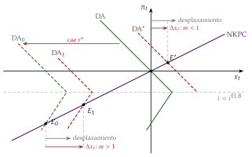
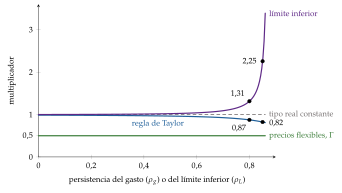
Fuente: Elaboración propia a partir de Woodford (2011), con \(\beta=0{,}99\), \(\theta=\varphi=1\) (\(\Gamma=0{,}5\)), \(\kappa=0{,}02\) y \(\phi_\pi=1{,}5\). En el eje horizontal, la persistencia del gasto (con la regla de Taylor) o del episodio de tipos en el límite (\(\rho_L\)): 1,31 con \(\rho_L=0{,}8\) (5 trimestres en promedio) y 2,25 con \(\rho_L=0{,}85\) (6,7).
iii) Implicaciones
El estímulo tiene que ser temporal: si el gasto sigue después de salir del límite, el banco central lo neutraliza entonces, y esa expectativa reduce el multiplicador incluso durante la crisis; con un gasto que probablemente siga, puede quedar por debajo de 1.
No todo instrumento sirve: una rebaja de los impuestos sobre el trabajo, expansiva en tiempos normales, se vuelve contractiva en el límite, porque abarata la producción, alimenta la deflación y sube el tipo real: es la paradoja del esfuerzo (paradox of toil). En un modelo calibrado, el multiplicador del gasto pasa de 0,48 en tiempos normales a 2,3 en el límite, y el de esa rebaja, de 0,16 a \(-1\).
Es la razón teórica de los estímulos de 2009 y 2020 (III.3).
c) Evidencia empírica
En los modelos: con la calibración que reproduce la Gran Depresión, la ecuación (9) da 2,3, ya cerca del valor de \(\rho_L\) que anula el denominador; Christiano, Eichenbaum y Rebelo (2011) llegan a 3,7 en un modelo sin capital, unas 3 veces el multiplicador normal, y los modelos de los bancos centrales dan de 2 a 3 cuando los tipos están fijos lo bastante.
En los datos: con datos históricos de Estados Unidos, en torno a 1,5, y en Japón, de 1,5 en el impacto a más de 2 después: la evidencia a favor de la teoría es algo más sólida que la del estado del ciclo.
d) Valoración
El resultado es tan fuerte que conviene desconfiar de su forma extrema: si el episodio dura mucho, el denominador de (9) se acerca a cero y el multiplicador se dispara; es el mismo problema que la paradoja de la orientación (forward guidance puzzle) [ver tema 3.A.37].
El gasto tiene que llegar mientras dura el límite: si llega tarde, cuando el banco central ya sube los tipos, el multiplicador vuelve a ser bajo.
Y el límite tiene que apretar de verdad: en Estados Unidos los tipos a 1 y 2 años siguieron respondiendo a las noticias entre 2008 y 2010, gracias a la orientación de la Reserva Federal.
III.2.2. En una unión monetaria
El banco central común no responde al gasto de una región, que es pequeña en el conjunto: es como si los tipos estuvieran fijos para ella. Por eso el multiplicador relativo de una región es alto: en torno a 1,5 entre los estados de Estados Unidos, con el gasto militar federal. No es el multiplicador nacional, pero distingue modelos: los de precios flexibles no lo generan y los neokeynesianos sí; Farhi y Werning (2016) muestran cuándo es mayor o menor que el nacional.
Una unión monetaria no es el límite inferior: la subida de precios del país que gasta es transitoria y tendrá que deshacerse después, de modo que su tipo real a largo plazo no baja, sino que sube algo, y su consumo cae. Por eso el multiplicador de un país de la unión es mucho menor que el del límite inferior.
Para un país de la zona del euro, la política fiscal es el único instrumento propio frente a perturbaciones propias [ver tema 3.B.16]. Pero sin tipo de cambio y con deuda alta, su margen depende de la prima de riesgo, y el multiplicador de un país muy endeudado puede ser nulo (II.3.3).
El bucle diabólico entre bancos y soberanos (doom loop): en la periferia del euro, la caída del valor de la deuda pública en manos de los bancos nacionales redujo su solvencia y su crédito; la probabilidad de que el Estado tuviera que rescatarlos empeoró a su vez la del soberano, y la recesión por la falta de crédito bajó la recaudación. Romperlo exige que los bancos diversifiquen su deuda soberana o un activo seguro europeo [ver tema 3.B.43].
III.2.3. La otra dirección: la política fiscal y la eficacia de la monetaria
La política fiscal también cambia la eficacia de la monetaria:
con deuda alta y a corto plazo, cada subida de tipos encarece la deuda y aumenta el déficit: es el canal por el que una política fiscal activa puede acabar dominando;
con muchos hogares que viven al día, la política monetaria actúa sobre todo a través del empleo y la renta, y la fiscal amplifica o amortigua ese efecto [ver tema 3.A.37].
La conclusión normativa de estos años: con tipos naturales bajos, la política fiscal debe tener un papel mayor en la estabilización, sobre todo en una recesión con los tipos en su límite, cuando más multiplica; con la economía en su potencial y un banco central con margen, debe dejarle la estabilización y ocuparse de la sostenibilidad.
III.3. La experiencia de las principales economías, por fases
Con el marco y los multiplicadores, recorremos lo ocurrido en Estados Unidos, la zona del euro, el Reino Unido y Japón en 5 fases (gráfico 14; la cronología por economías, en el anexo D; el impulso fiscal y el diferencial entre el tipo de interés y el crecimiento, en el gráfico 15):
en 2008-2009 las 2 políticas fueron en la misma dirección: tipos en el suelo, primeras compras de activos y planes de estímulo;
de 2010 a 2014 se separaron: la monetaria, cada vez más expansiva, y la fiscal, consolidando, sobre todo en Europa;
en 2020 volvieron a coincidir, con una intensidad sin precedentes;
desde 2022 la monetaria se endureció contra la inflación, y la fiscal se reordenó con reglas nuevas, más gasto en defensa y el final de los fondos europeos de recuperación.
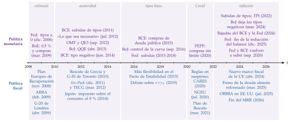
Fuente: Elaboración propia a partir de las fuentes de los bancos centrales, la Comisión Europea y los Gobiernos citadas en este apartado y en el anexo D.
III.3.1. 2008-2009: estímulo coordinado
Monetaria: los tipos llegaron a su límite y empezaron las compras de activos en Estados Unidos y el Reino Unido (I.2); el BCE dio a los bancos toda la liquidez que pidieran.
Fiscal: el FMI pidió un estímulo mundial del 2 % del PIB, temporal, rápido y dirigido, y el G-20 coordinó la respuesta [ver tema 3.B.19]:
Estados Unidos aprobó en febrero de 2009 la Ley de Recuperación y Reinversión (ARRA), que costó unos 831.000 millones de dólares en 2009-2019;
la Unión Europea, en noviembre de 2008, un Plan Europeo de Recuperación de 200.000 millones de euros, el 1,5 % de su PIB;
la cumbre del G-20 de Londres, en abril de 2009, cifró la expansión fiscal conjunta en 5 billones de dólares hasta finales de 2010, con un aumento esperado de la producción del 4 %, contando medidas ya en marcha;
en 2009 las 4 economías dieron un impulso fiscal de más de un punto del PIB potencial: 2,3 puntos Estados Unidos, 1,4 la zona del euro, 2,3 el Reino Unido y 2,4 Japón.
Lectura: el cuadrante de las 2 expansivas, con los tipos en el límite: el caso en que la teoría da multiplicadores mayores (III.2.1). Las comparaciones entre estados de los fondos de la ARRA dan multiplicadores relativos en torno a 2, que no son el nacional.
III.3.2. 2010-2014: austeridad y crisis del euro
Fiscal: con la crisis griega, el G-20 se comprometió en Toronto, en junio de 2010, a reducir al menos a la mitad los déficits de las economías avanzadas antes de 2013. La zona del euro retiró casi 4 puntos de impulso fiscal entre 2011 y 2013 y endureció sus reglas fiscales: el paquete de 6 medidas (Six-Pack), en vigor desde diciembre de 2011, y el Tratado de Estabilidad, Coordinación y Gobernanza (TECG), firmado en marzo de 2012, que exige un déficit estructural no superior al 0,5 % del PIB [ver tema 3.B.45]; en el Reino Unido, el presupuesto de junio de 2010 añadió un ajuste de 40.000 millones de libras al año hasta 2014-2015, el 80 % con recortes del gasto, y subió el IVA al 20 %; Estados Unidos retiró impulso fiscal todos los años de 2011 a 2013, en torno a 2 puntos al año según el FMI, y el Reino Unido consolidó en 2011 y en 2013, con una pausa en 2012.
Monetaria: el BCE subió los tipos 2 veces en 2011, en plena crisis de deuda; la Reserva Federal y el Banco de Inglaterra siguieron comprando bonos.
El error de los multiplicadores: es el periodo de Blanchard y Leigh (II.3.4). Se consolidó con los tipos en el límite y el banco central no podía compensar el ajuste: el cuadrante en el que el multiplicador es mayor. Fue el caso de España [ver tema 4.B.26].
El giro: el 26 de julio de 2012 Draghi dijo que el BCE haría «lo que sea necesario» para preservar el euro; el 2 de agosto anunció las operaciones monetarias de compraventa (OMT), compras de deuda sin límite previo de los países con un programa de ajuste, y el 6 de septiembre fijó sus condiciones. Las primas de riesgo bajaron sin que se activaran nunca: la política monetaria respaldaba a la fiscal a cambio de condiciones. Es el cuadrante de la consolidación con política monetaria expansiva, y empieza a ser «juntos, pero no revueltos» [ver tema 3.B.43].
Japón: en enero de 2013 el Gobierno y el banco central firmaron una declaración conjunta para superar la deflación, dentro de las 3 flechas de la «abenomía» (política monetaria agresiva, política fiscal flexible y reformas); en abril llegó la expansión cuantitativa y cualitativa, con el objetivo de una inflación del 2 % en unos 2 años, pero la subida del impuesto sobre el consumo de 2014, hasta el 8 % (en 2019 pasó al 10 %), frenó la recuperación: una combinación tensionada.
III.3.3. 2015-2019: tipos bajos y \(r<\gamma_Y\)
Monetaria: el BCE empezó a comprar deuda pública en 2015 y bajó la facilidad de depósito hasta el \(-0{,}50\) % en 2019; el Banco de Japón añadió en 2016 los tipos negativos y el control de la curva; la Reserva Federal subió los tipos de 2015 a 2018. La inflación siguió por debajo del objetivo en la zona del euro y en Japón.
El debate fiscal: O. Blanchard (2019) mostró que en Estados Unidos el tipo seguro ha estado casi siempre por debajo del crecimiento. Si \(r<\gamma_Y\), la deuda no explota con un déficit primario constante: converge a \[d^*=\frac{(g-\tau)(1+\gamma_Y)}{\gamma_Y-r}, \tag{10}\] y su coste fiscal es pequeño, lo que deja margen para la inversión pública [ver tema 3.A.39] [ver tema 3.A.29]. Es el argumento de Summers para gastar en un mundo con estancamiento secular.
Las críticas:
el diferencial puede cambiar de signo y los mercados pueden exigir de pronto primas mayores: con deudas altas, el riesgo de una crisis que se cumple sola aconseja prudencia;
no avisa antes de las crisis: con datos de muchos países y siglos, Mauro y Zhou (2020) encuentran que \(r-\gamma_Y\) ha sido negativo con frecuencia y no era mayor antes de los impagos;
el problema no es de demanda, sino de oferta, y se resuelve con reformas, no con deuda (I.1).
III.3.4. 2020-2021: la Covid, la mayor coordinación
Monetaria: los tipos volvieron al límite y las compras fueron masivas: la Reserva Federal anunció compras «en las cantidades necesarias»; el BCE, el programa de emergencia frente a la pandemia (PEPP), de hasta 1,85 billones de euros; el Banco de Inglaterra bajó el tipo al 0,1 % y amplió sus compras, y el Banco de Japón también compró más.
Fiscal:
en Estados Unidos, la ley CARES de marzo de 2020 aumentó el déficit en unos 1,7 billones de dólares, la ley de diciembre de 2020 añadió unos 900.000 millones, y el Plan de Rescate de marzo de 2021, 1,9 billones; las medidas de gasto e ingresos de Estados Unidos sumaron el 25,5 % del PIB de 2020, frente a solo el 2,4 % en préstamos y avales, mientras que en Europa pesaron más los avales y la liquidez;
en Europa, se suspendieron las reglas fiscales; el instrumento SURE prestó 98.400 millones de euros, financiados con bonos sociales de la Unión, para sostener los expedientes de regulación temporal de empleo y sus equivalentes, y Next Generation EU, acordado en julio de 2020, podía llegar a 806.900 millones de euros corrientes (750.000 millones a precios de 2018: 390.000 en transferencias y 360.000 en préstamos), la primera deuda común a gran escala [ver tema 3.B.45];
en 2020 el impulso fiscal fue de 5,0 puntos en Estados Unidos, 3,4 en la zona del euro, 8,2 en el Reino Unido y 4,9 en Japón: el cuadrante de las 2 expansivas, el de 3 de cada 4 economías del mundo (III.1).
Por qué así: la Covid fue una perturbación de oferta en unos sectores que se convirtió en una caída de demanda en el conjunto, una perturbación de oferta keynesiana: con sectores cerrados, el gasto genérico multiplica poco, y lo eficaz son los seguros a las rentas de los trabajadores y a la liquidez de las empresas. Un año después de una crisis sanitaria, el multiplicador acumulado es el doble que en tiempos normales, sobre todo en las economías avanzadas.
Lectura: la mayor coordinación de la historia reciente, «juntos» en el tono, aunque cerca de lo «revuelto»: los bancos centrales compraron buena parte de la deuda que se emitía.
III.3.5. 2021-2026: inflación, subida de tipos y vuelta al debate
El estímulo de más: en febrero de 2021, Summers y Blanchard advirtieron de que el Plan de Rescate, mucho mayor que la brecha de producción, podía recalentar la economía. La inflación llegó al 9,1 % en Estados Unidos en junio de 2022 y al 10,6 % en la zona del euro en octubre. Vino sobre todo de la energía, los alimentos y los cuellos de botella, y después de un mercado de trabajo muy tenso; para la teoría fiscal del nivel de precios, una parte se debió a un gasto que el público no esperaba ver pagado con superávits futuros.
Monetaria: la Reserva Federal subió 525 puntos básicos entre marzo de 2022 y julio de 2023; el BCE, 450 en 14 meses; el Banco de Inglaterra, hasta el 5,25 % en agosto de 2023, y el Banco de Japón dejó los tipos negativos y el control de la curva en marzo de 2024. Bajaron después y, en 2026, han vuelto a subir: la Reserva Federal tiene los fondos federales en el 3,75-4,00 % desde el 17 de septiembre; el BCE, la facilidad de depósito en el 2,50 % desde el 16 de septiembre; el Banco de Inglaterra, el tipo en el 3,75 %, y el Banco de Japón, en el 1,25 % desde el 24 de septiembre (gráfico 3).
Una combinación tensionada:
en 2022 el 74 % de las economías aplicó las 2 políticas contractivas, y Estados Unidos retiró 6,6 puntos de impulso fiscal;
pero en Europa las ayudas a la energía fueron expansivas mientras los bancos centrales subían los tipos: restaron entre 1 y 2 puntos a la inflación europea de 2022, aunque pocas fueron selectivas;
las ayudas europeas a la energía costaron en torno al 1,2 % del PIB de la Unión en 2022;
el caso extremo fue el Reino Unido: el 23 de septiembre de 2022, un plan de rebajas de impuestos sin financiar, junto a unas ayudas a la energía de unos 60.000 millones de libras en 6 meses, disparó los tipos de la deuda, y el Banco de Inglaterra, que estaba subiendo los tipos, tuvo que comprar deuda a largo plazo para frenar la crisis de los fondos de pensiones: fiscal expansiva y monetaria contractiva, «revueltos».
Dominación monetaria, con red: en julio de 2022 el BCE creó el instrumento para la protección de la transmisión (TPI), que permite comprar deuda de un país si su prima sube sin justificación y cumple las reglas [ver tema 3.B.43]. Con él subió los tipos sin una crisis de deuda; la independencia se mantuvo, con el coste de las pérdidas de los bancos centrales (I.3).
Reglas nuevas y gasto en defensa: la cláusula general de salvaguardia se desactivó a finales de 2023, y en abril de 2024 entró en vigor un nuevo marco fiscal europeo, cuyo eje es una senda de gasto neto fijada en planes nacionales de 4 o 5 años [ver tema 3.B.45]. En marzo de 2025 Alemania reformó su freno de la deuda para dejar fuera el gasto en defensa por encima del 1 % del PIB y crear un fondo de 500.000 millones de euros para infraestructuras y neutralidad climática, y en julio Estados Unidos aprobó la ley de reconciliación presupuestaria (One Big Beautiful Bill Act), que hizo permanentes las rebajas fiscales de 2017.
El resultado: mucha más deuda (tabla 6). Con ella, la frontera entre la política fiscal y la monetaria ya no puede ignorarse.
El diferencial cambia: con el tipo implícito de la deuda, \(r-\gamma_Y\) fue negativo en las 4 economías de 2021 a 2025, por la inflación, y en 2025 era de \(-1{,}0\) puntos en Estados Unidos, \(-1{,}6\) en la zona del euro y \(-1{,}5\) en el Reino Unido; la Comisión prevé que en 2026 el Reino Unido vuelva a cero.8
¿Ha terminado el estancamiento secular? En el debate del PIIE del 7 de marzo de 2023:
Summers sostuvo que sí: medía el fin del estancamiento por si el tipo real neutral superaba con holgura el 0,5 % que la Reserva Federal tomaba como neutral, y un tipo del 1,5 % sería ya salir de él;
Blanchard, que no: los tipos reales llevaban más de 35 años cayendo antes de la Covid, las fuerzas de fondo (el envejecimiento, la demanda de activos seguros, la inversión débil) siguen ahí, y mientras \(r<\gamma_Y\) seguimos en él;
parte del desacuerdo era de definición: Summers compara el tipo con el neutral de antes, y Blanchard, con el crecimiento. «No hay mal que cien años dure», pero las causas de este son lentas.
| Economía | 2007 | 2025 | Variación (puntos) |
|---|---|---|---|
| Estados Unidos | 65,0 | 124,4 | +59,4 |
| Zona del euro | 65,8 | 87,3 | +21,5 |
| Reino Unido | 43,1 | 102,1 | +59,0 |
| Japón | 150,4 | 204,8 | +54,4 |
Fuente: Elaboración propia a partir de Fondo Monetario Internacional (2026b) (deuda bruta de las administraciones públicas del World Economic Outlook; 2025 puede ser aún estimación). Con los datos de Eurostat (2026a), la de la zona del euro en 2025 es el 87,7 %.
El debate entre Blanchard y Summers sobre el fin del estancamiento secular: la entrada de Blanchard, https://www.
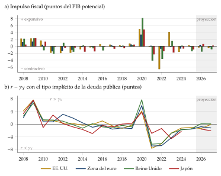
Fuente: Elaboración propia a partir de Fondo Monetario Internacional (2026a) (impulso fiscal: menos la variación del saldo primario ajustado por el ciclo, en puntos del PIB potencial) y Comisión Europea (2026a) (\(r-\gamma_Y\) con el tipo implícito real de la deuda); 2026 y 2027, previsiones. Segunda comprobación con OCDE (2026): coinciden en el signo de los grandes episodios (2009, 2011-2013, 2020 y 2022).
Recapitulación del bloque: la combinación fue coherente en las 2 recesiones (2009 y, sobre todo, 2020), con multiplicadores altos porque la política monetaria acompañaba; se tensionó en la austeridad de 2010-2013, cuando se consolidó con los tipos en el límite, y en 2022, cuando en algunos países la fiscal empujaba y la monetaria frenaba. La dominación monetaria ha sobrevivido, pero con un banco central que respalda a la deuda soberana a cambio de disciplina fiscal.
Conclusión
Recapitulación:
En conclusión, la exposición ha respondido a sus 3 preguntas:
la política monetaria perdió su instrumento porque el tipo natural cayó por debajo del límite; los instrumentos nuevos funcionaron, pero con menos fuerza y más costes;
el multiplicador del gasto vale entre 0,6 y 1 en tiempos normales y más de 1 cuando la política monetaria acompaña, como en el límite inferior; depende también de la apertura, de la deuda y de a quién llega el dinero;
las 2 políticas se condicionan: la combinación fue coherente en 2009 y 2020 y se tensionó en 2010-2013 y 2022, y la independencia del banco central se ha mantenido con una red para la deuda soberana.
Relevancia:
Con deudas cercanas al 100 % del PIB y tipos que vuelven a subir, el margen fiscal es escaso; saber cuándo multiplica el gasto decide cuándo gastarlo.
Quedan preguntas abiertas:
si el tipo natural vuelve a ser bajo, la estabilización dependerá más de la política fiscal y de los estabilizadores automáticos;
en la zona del euro, sin una política fiscal común, la coordinación ha recaído en el BCE: ¿es Next Generation EU el embrión de una capacidad fiscal común o un paréntesis?
para España, el fin del Mecanismo de Recuperación y Resiliencia en 2026 plantea cómo sostener la inversión pública, el instrumento que más multiplica, dentro de las reglas nuevas;
¿están las economías avanzadas preparadas para la próxima recesión, con tipos bajos y deuda alta?
Extensiones:
El déficit, la sostenibilidad y la dominación [ver tema 3.A.39]; el diseño de la política monetaria [ver tema 3.A.36] y sus canales [ver tema 3.A.37]; la política fiscal y el crecimiento [ver tema 3.A.38]; la inflación y la deflación [ver tema 3.A.41]; el ciclo financiero [ver tema 3.A.42]; la coordinación internacional [ver tema 3.B.19]; la gobernanza del euro [ver tema 3.B.43] [ver tema 3.B.45], donde está también el euro digital, que podría emitirse hacia 2029, y la política fiscal en España [ver tema 4.B.4] [ver tema 4.B.26].
Opinión:
La lección de estos años es de calendario: gastar con fuerza cuando los tipos están en su límite, que es cuando el gasto multiplica y la deuda es barata, y consolidar cuando la economía y el banco central pueden absorberlo.
Europa lo hizo al revés en 2010-2013 y al derecho en 2020.
Idea final:
En 2010-2013 el remedio fue peor que la enfermedad porque se aplicó solo: se consolidó cuando el banco central no podía compensar y el multiplicador era más alto.
El valor del multiplicador no es una constante de la naturaleza, sino que depende de lo que haga el banco central.
Por eso, a la pregunta de cuánto vale un euro de gasto público, la respuesta es que las políticas monetaria y fiscal rinden más cuando van juntas, pero no revueltas: coordinadas en el tono y cada una con su mandato.
A. Anexo: el multiplicador del gasto en el modelo neokeynesiano
El modelo: con el gasto en la demanda, \(Y_t=C_t+G_t\), el hogar del modelo canónico [ver tema 3.A.7] y un gasto medio pequeño respecto al PIB, el consumo en desviaciones es \(y_t-\hat g_t\), con \(y_t\) el logaritmo de la producción en desviaciones y \(\hat g_t\equiv(G_t-\overline{G})/\overline{Y}\). Las ecuaciones son \[\begin{aligned} y_t-\hat g_t&=\mathbb{E}_t[y_{t+1}-\hat g_{t+1}]-\tfrac{1}{\theta}\left(i_t-\mathbb{E}_t[\pi_{t+1}]-\rho\right), \tag{11}\\ \pi_t&=\beta\,\mathbb{E}_t[\pi_{t+1}]+\kappa\,(y_t-y^n_t). \tag{12} \end{aligned}\] Escribiendo \(y_t=x_t+y^n_t\), la primera es la IS dinámica del modelo canónico con el gasto dentro de \(r^n_t\) (II.2.3).
Paso 1, el multiplicador neoclásico (la producción natural):
En general: en una economía estática, el hogar obtiene utilidad del consumo, \(u(C)\), y desutilidad de producir, \(v(Y)\), con \(C=Y-G\) y el gasto pagado con impuestos de cuantía fija. En el óptimo, \(u'(Y-G)=v'(Y)\). Diferenciando, \(u''\,(dY-dG)=v''\,dY\), y con \(\eta_u\equiv-u''\,\overline{Y}/u'\) y \(\eta_v\equiv v''\,\overline{Y}/v'\) (y \(u'=v'\) en el óptimo), \[\frac{dY}{dG}=\frac{-u''}{-u''+v''}=\frac{\eta_u}{\eta_u+\eta_v}\equiv\Gamma\in(0,1),\] que es (6): el hogar, más pobre, trabaja más, pero el consumo cae.
Con las formas del modelo canónico: con precios flexibles, el salario real es constante (el margen es fijo y la producción es lineal en el trabajo) e igual a la relación marginal de sustitución entre consumo y ocio, \(C_t^{\theta}L_t^{\varphi}\). En logaritmos, \(\theta\,(y^n_t-\hat g_t)+\varphi\,y^n_t=0\), y \[y^n_t=\Gamma\,\hat g_t,\qquad \Gamma\equiv\frac{\theta}{\theta+\varphi}\in(0,1). \tag{13}\] Es el caso \(\eta_u=\theta\), \(\eta_v=\varphi\): el gasto desplaza consumo (\(1-\Gamma\) por unidad) y añade trabajo. ∎
Paso 2, banco central que mantiene el tipo real:
si \(i_t-\mathbb{E}_t[\pi_{t+1}]=\rho\), la IS queda \(y_t-\hat g_t=\mathbb{E}_t[y_{t+1}-\hat g_{t+1}]\);
como el gasto es transitorio y la economía vuelve al estado estacionario, el consumo no cambia en ningún periodo y \(y_t=\hat g_t\): el multiplicador es 1. ∎
Paso 3, regla de Taylor:
con \(i_t=\rho+\phi_\pi\pi_t\) y un gasto persistente, \(\hat g_t=\rho_g\hat g_{t-1}\) más una innovación, se prueban soluciones \(y_t=a\,\hat g_t\), \(\pi_t=c\,\hat g_t\);9
de (12), \(c\,(1-\beta\rho_g)=\kappa\,(a-\Gamma)\); de (11), \((1-\rho_g)(a-1)=-\frac1\theta(\phi_\pi-\rho_g)\,c\);
con \(\Omega\equiv\kappa(\phi_\pi-\rho_g)/[\theta(1-\rho_g)(1-\beta\rho_g)]>0\), \[a-1=-\Omega\,(a-\Gamma)\quad\Longrightarrow\quad a=\frac{1+\Omega\,\Gamma}{1+\Omega}\in(\Gamma,1), \tag{14}\] que es (7). El multiplicador es una media ponderada de 1 (precios rígidos, \(\kappa\to0\)) y de \(\Gamma\) (precios flexibles o regla muy agresiva, \(\Omega\to\infty\)), y el consumo cae, \(a-1<0\). Si el banco central responde también a la brecha, la respuesta se suma a \(\Omega\) y el resultado es el mismo. ∎
Paso 4, límite inferior:
una perturbación de demanda lleva el tipo natural sin gasto a \(r^n_L<0\); el banco central deja el tipo en el límite (\(i_t=0\), para simplificar) mientras dura, y cada periodo la crisis continúa con probabilidad \(\rho_L\); cuando acaba, la política vuelve a cerrar la brecha y todo vuelve al estado estacionario;
si el gasto \(\hat g_L\) dura lo mismo que la crisis, en el estado de crisis las expectativas son \(\mathbb{E}_t[\pi_{t+1}]=\rho_L\pi_L\) y \(\mathbb{E}_t[y_{t+1}-\hat g_{t+1}]=\rho_L(y_L-\hat g_L)\), y las 2 ecuaciones quedan \[\begin{aligned} (1-\rho_L)(y_L-\hat g_L)&=\tfrac1\theta\left(\rho_L\pi_L+r^n_L\right),\\ (1-\beta\rho_L)\,\pi_L&=\kappa\,(y_L-\Gamma\hat g_L); \end{aligned}\]
sustituyendo \(\pi_L\) y agrupando, \[y_L\left[(1-\rho_L)(1-\beta\rho_L)-\tfrac{\rho_L\kappa}{\theta}\right]=\hat g_L\left[(1-\rho_L)(1-\beta\rho_L)-\tfrac{\rho_L\kappa\Gamma}{\theta}\right]+\tfrac{1-\beta\rho_L}{\theta}\,r^n_L ,\] de donde sale (9);
como \(\Gamma<1\), el numerador es mayor que el denominador, que tiene que ser positivo para que el equilibrio sea acotado: el multiplicador es mayor que 1, y crece sin límite cuando el denominador se acerca a cero (episodios largos, precios flexibles);
el último término muestra la otra cara: la misma perturbación provoca una recesión tanto mayor cuanto menor es el denominador, y una mayor flexibilidad de precios la agrava, la paradoja de la flexibilidad. ∎
Interpretación gráfica: de la primera ecuación, la demanda en la crisis es creciente en la inflación, con pendiente \(\theta(1-\rho_L)/\rho_L\) en el plano \((y,\pi)\); la oferta lo es con pendiente \(\kappa/(1-\beta\rho_L)\). Que el denominador sea positivo equivale a que la demanda sea más inclinada que la oferta: es la rama del límite del gráfico 12.
Ejemplos numéricos (gráfico 13):
con \(\beta=0{,}99\), \(\theta=\varphi=1\) (\(\Gamma=0{,}5\)) y \(\kappa=0{,}02\), el multiplicador en el límite es 1 si el episodio dura un periodo, 1,31 si dura en promedio 5 trimestres (\(\rho_L=0{,}8\)) y 2,25 si dura en promedio 6,7 (\(\rho_L=0{,}85\)); con la regla de Taylor (\(\phi_\pi=1{,}5\)) y la misma persistencia del gasto, 0,87 y 0,82;
con la calibración de la Gran Depresión (\(\beta=0{,}997\), \(\kappa=0{,}00859\), \(1/\theta=0{,}862\), \(\Gamma=0{,}425\), \(\rho_L=0{,}903\)), es 2,29, y el denominador se anula con \(\rho_L\approx0{,}919\).
B. Anexo: el modelo de Leeper
Supuestos: una economía de dotación con precios flexibles. El banco central fija el tipo nominal bruto, \(R_t\), y la autoridad fiscal el superávit primario real, \(s_t\), con 2 reglas: \[\frac{1}{R_t}=\frac{1}{R^*}+\alpha_\pi\left(\frac{1}{\pi_t}-\frac{1}{\pi^*}\right)+\varepsilon^M_t,\qquad s_t=s^*+\gamma\left(\frac{B_{t-1}}{R_{t-1}P_{t-1}}-\frac{b^*}{R^*}\right)+\varepsilon^F_t ,\] donde \(\alpha_\pi\) mide la respuesta del tipo a la inflación, \(\pi_t\) (aquí, bruta), y \(\gamma\) la del superávit a la deuda real, con objetivos \(\pi^*\) y \(b^*\).10
Estabilidad:
la inflación es estable si \(\alpha_\pi/\beta>1\): política monetaria activa;
la deuda es estable si \(\gamma>\beta^{-1}-1\): política fiscal pasiva, que sube el superávit lo bastante para pagar al menos los intereses de la deuda adicional.
Dominación fiscal: con \(\gamma=0\), el nivel de precios sale directamente de la condición de valoración (8): \[P_t=\frac{B_{t-1}}{(1-\beta)^{-1}s^*+\sum_{j=0}^{\infty}\beta^{j}\,\mathbb{E}_t\,\varepsilon^F_{t+j}} .\] La noticia de menores superávits futuros sube el nivel de precios, que reduce el valor real de la deuda hasta igualarlo con el respaldo fiscal esperado. Para que exista este equilibrio, la política monetaria tiene que ser pasiva, \(\alpha_\pi/\beta<1\): el banco central renuncia a fijar la inflación. ∎
C. Anexo: los métodos empíricos en detalle
Vector autorregresivo estructural: con un VAR trimestral de los impuestos netos, \(t_t\), el gasto, \(g_t\), y la producción, \(y_t\), las innovaciones de forma reducida mezclan las perturbaciones estructurales, \(e^t_t\), \(e^g_t\) y \(e^y_t\): \[t_t=a_1\,y_t+a_2\,e^g_t+e^t_t,\qquad g_t=b_1\,y_t+b_2\,e^t_t+e^g_t,\qquad y_t=c_1\,t_t+c_2\,g_t+e^y_t .\] La identificación usa supuestos institucionales:11
dentro del trimestre, la política discrecional no reacciona a la producción, porque las decisiones tardan, y el gasto tampoco responde de forma automática: \(b_1=0\);
la respuesta automática de los impuestos a la producción, \(a_1\), se calcula fuera del modelo con las leyes fiscales: una elasticidad media de 2,08;
el orden entre gasto e impuestos apenas importa, porque sus perturbaciones casi no están correlacionadas.
Con este método, el multiplicador del gasto es 0,84 en el impacto y llega a 1,29 a los 15 trimestres, y el de los impuestos toca fondo en \(-0{,}78\) a los 5 trimestres: multiplicadores «pequeños, a menudo cercanos a 1».
Restricciones de signo: otra forma de identificar es exigir signos a las respuestas; con ella, el gasto financiado con déficit multiplica poco y una rebaja de impuestos financiada con déficit, mucho más.
Método narrativo: Romer y Romer (2010) leen los documentos del Congreso y de la Presidencia de Estados Unidos y clasifican cada cambio de impuestos por su motivo; solo usan los no relacionados con el ciclo (déficits heredados, crecimiento a largo plazo). Una subida de impuestos del 1 % del PIB reduce la producción casi un 3 % en los 3 años siguientes. Ramey (2011b) construye una serie de noticias de gasto militar, el valor actual del gasto que se anuncia, a partir de la prensa: así recoge la anticipación, que un VAR confunde con un efecto retrasado; sus multiplicadores están entre 0,6 y 1,2.
VAR con instrumentos narrativos: la serie narrativa se usa como instrumento de las perturbaciones del VAR. Con este método, la elasticidad de los impuestos a la producción sale en torno a 3, mucho mayor que la que suponían Blanchard y Perotti, y esa diferencia es la razón principal de la distancia entre los multiplicadores de impuestos del VAR y del método narrativo.
Proyecciones locales: para cada horizonte \(h\) se estima por separado \[y_{t+h}=\alpha_h+\beta_h\,\varepsilon_t+\text{controles}_{t-1}+u_{t+h},\] con \(\varepsilon_t\) la perturbación identificada, y la sucesión de \(\beta_h\) es la respuesta.12 Permite que la respuesta dependa del estado de la economía (recesión o expansión, límite inferior o tipos normales).
El multiplicador en un solo paso: con la producción y el gasto en proporción de la producción tendencial (en las mismas unidades), se estima \[\sum_{h=0}^{H}y_{t+h}=\alpha_H+m_H\sum_{h=0}^{H}g_{t+h}+\text{controles}_{t-1}+u_{t+H},\] instrumentando el gasto acumulado con la perturbación. El coeficiente \(m_H\) es directamente el multiplicador acumulado (3), con su error estándar, y se evita convertir elasticidades en multiplicadores con una ratio media \(Y/G\) que cambia mucho en el tiempo.
Multiplicadores locales: Nakamura y Steinsson (2014) comparan estados de Estados Unidos con más y menos gasto militar federal: miden cuánto crece un estado respecto a otro, con la misma política monetaria y los mismos impuestos federales (III.2.2). Con los fondos federales y otras fuentes, el multiplicador regional ronda 1,8, que se puede leer como una cota inferior aproximada del nacional sin respuesta monetaria.
Modelos estimados: los bancos centrales y el FMI simulan el mismo estímulo en sus modelos; Coenen et al. (2012) comparan 7 de ellos y encuentran multiplicadores del consumo público de 0,7 a 1 el primer año con la política monetaria normal y de 1,2 a 2,2 con 2 años de acomodación monetaria; el de la ARRA, en cambio, sale de 1 o menos incluso con acomodación, porque buena parte del gasto llegó tarde. Su ventaja es que permiten simular lo que tiene pocos precedentes, como un límite inferior largo; su inconveniente, que el resultado depende de la estructura supuesta.
La política monetaria: desde 2008 el instrumento ya no es solo un tipo, sino anuncios y compras. 2 métodos han ganado peso:
la identificación de alta frecuencia: la variación de los futuros sobre tipos en una ventana estrecha (unos 30 minutos) en torno a cada anuncio se usa como instrumento de la perturbación monetaria;
los estudios de eventos: se suma la variación de los tipos largos en los días de anuncio de compras; Swanson (2021) separa además cada anuncio en 3 componentes: el tipo oficial, la orientación y las compras.
D. Anexo: cronología de las políticas, 2008-2026
| Fase | Estados Unidos | Zona del euro | Reino Unido | Japón |
|---|---|---|---|---|
| 2008-2009 | Tipos al 0-0,25 % (dic. 2008); compras de activos (nov. 2008 y mar. 2009); ARRA (feb. 2009) | Recortes de tipos; liquidez ilimitada a los bancos; Plan Europeo de Recuperación (nov. 2008) | Tipo al 0,5 % (mar. 2009); compras de activos | Tipos cerca de cero; estímulo fiscal |
| 2010-2014 | Nuevas compras (2010 y 2012); retirada del estímulo fiscal (2011-2013) | Crisis de deuda; subidas de tipos (2011); «lo que sea necesario» y OMT (2012); facilidad de depósito negativa (2014) | Consolidación fiscal (2011 y 2013); Funding for Lending (2012) | «Abenomía» y expansión cuantitativa y cualitativa (2013); subida del impuesto sobre el consumo (2014) |
| 2015-2019 | Subidas de tipos (2015-2018) y reducción del balance | Compras de deuda pública (2015); facilidad de depósito en \(-0{,}50\) % (2019) | Tipos bajos; compras tras el referéndum del brexit (2016) | Tipos negativos y control de la curva (2016); subida del impuesto sobre el consumo al 10 % (2019) |
| 2020-2021 | Tipos a cero; compras sin límite; CARES (2020) y Plan de Rescate (2021) | PEPP; reglas fiscales suspendidas; SURE; Next Generation EU | Tipo al 0,1 %; compras; mayor estímulo fiscal de las 4 en 2020 | Más compras; estímulo fiscal |
| 2022-2026 | +525 pb (2022-2023); bajadas desde 2024; +25 pb (sept. 2026); fin de la reducción del balance (dic. 2025) | +450 pb (2022-2023); TPI (2022); bajadas desde 2024; subidas en junio y septiembre de 2026 | Hasta el 5,25 % (2023); crisis de la deuda (sept. 2022); bajadas desde 2024; 3,75 % | Fin de los tipos negativos y del control de la curva (mar. 2024); subidas hasta el 1,25 % (sept. 2026) |
Fuente: Elaboración propia a partir de Federal Reserve Bank of New York (2026a), Banco Central Europeo (2026c), Bank of England (2026a), Banco de Japón (2024), Banco de Japón (2026), Federal Open Market Committee (2025), Fondo Monetario Internacional (2026a), OCDE (2026), National Tax Agency of Japan (2026) y las demás referencias del apartado III.3.
El BCE entre 2008 y 2014, antes de las compras masivas de 2015, respondió sobre todo con préstamos a los bancos:
adjudicación plena: desde el 15 de octubre de 2008, las operaciones principales se hicieron a tipo fijo, y cada banco obtenía toda la liquidez que pedía si aportaba garantías suficientes;
programa para los mercados de valores (Securities Markets Programme), de mayo de 2010: compras de deuda para corregir el mal funcionamiento de esos mercados, esterilizadas para no cambiar el tono de la política; terminó en septiembre de 2012, con las OMT;
subidas de 2011: el tipo de las operaciones principales pasó del 1 al 1,25 % en abril y al 1,50 % en julio, y en diciembre ya había vuelto al 1 %;
préstamos a 3 años (LTRO), adjudicados el 21 de diciembre de 2011 y el 29 de febrero de 2012, con la rebaja del coeficiente de reservas del 2 al 1 % y más garantías admitidas.
E. Anexo: aspectos para el test
Preguntas tipo test del primer ejercicio: simulador de test.
Presupuesto equilibrado: en la cruz keynesiana con impuestos de cuantía fija, el multiplicador de un gasto financiado con impuestos es 1; en el modelo IS-LM, menor que 1, por la expulsión.
Keynes: estimó un multiplicador en torno a 2,5 con los datos de Kuznets, no «entre 2 y 3» como regla.
El error del FMI: los multiplicadores supuestos eran de alrededor de 0,5; los observados desde 2008, entre 0,9 y 1,7.
Cifra de síntesis: gasto entre 0,6 y 1; impuestos entre 2 y 3 en valor absoluto.
Recesiones: el multiplicador mayor en las recesiones es de Auerbach y Gorodnichenko (2012); Ramey y Zubairy (2018) no lo encuentran.
Límite inferior: el gasto multiplica más; una rebaja de los impuestos sobre el trabajo puede ser contractiva. El trabajo es de Christiano, Eichenbaum y Rebelo (2011), no «de Rebelo y otros».
Tipo de cambio: con tipo flexible, el multiplicador es casi nulo; con tipo fijo, positivo, como predice el modelo de Mundell y Fleming [ver tema 3.A.32].
Estancamiento secular: Hansen (1939) lo formuló; Summers lo recuperó en 2013; el tipo neutral cayó al menos 300 pb.
Dominación: la aritmética monetarista desagradable describe lo que ocurre bajo dominación fiscal; no la defiende. Con Leeper (1991), el equilibrio es único con una autoridad activa y otra pasiva.
Paradoja del esfuerzo: en el límite inferior, una rebaja del impuesto sobre el trabajo puede ser contractiva.
Multiplicador neoclásico: \(\Gamma=\eta_u/(\eta_u+\eta_v)\), entre 0 y 1.
Bibliografía
Hansen lo apoyaba además en una propensión media al consumo que caería con la renta, algo que Kuznets refutó con datos de largo plazo [ver tema 3.A.33]. El debate actual no se apoya en eso, sino en el tipo de interés natural.↩︎
Es la hipótesis de las expectativas con prima, en logaritmos; \(i^{(n)}_t\) es el tipo a \(n\) periodos y la prima por plazo va sin letra. La estructura temporal de los tipos, [ver tema 3.B.24].↩︎
Aquí \(m\) con índices es el multiplicador, con la notación del canon del temario; sin índices, en la ecuación (4), es la propensión marginal a importar. En \(m^{\,t}_t\) y \(m^{\,t+k}_t\), \(t\) es el periodo, no el tipo impositivo \(t\) del modelo keynesiano.↩︎
Algunos manuales dividen la producción acumulada solo por el gasto del primer periodo, \(\Delta G_t\). Con un gasto que dura varios periodos, eso exagera el multiplicador; la literatura reciente divide por el gasto acumulado.↩︎
Aquí \(b\) es la sensibilidad de la inversión al tipo de interés, \(k\) y \(h\) las de la demanda de dinero a la renta y al tipo, como en el modelo IS-LM; \(b\) no es el saldo público \(b^{pe}\) de la introducción.↩︎
\(\hat g_t\) es local de este apartado y del anexo A: no es la ratio \(g_t=G_t/Y_t\) de la restricción del sector público. También \(\Gamma\) es local: el multiplicador con precios flexibles.↩︎
\(\rho_L\) es local: la probabilidad de que el episodio de tipos en el límite continúe el periodo siguiente; su duración esperada es \(1/(1-\rho_L)\) periodos.↩︎
Con el coste medio de la deuda y el deflactor del PIB de AMECO, para tener la misma fuente en las 4 economías (Japón no tiene dato de 2025). Con los datos de Eurostat, el 3.A.39 da \(-1{,}2\) para la zona del euro en 2025.↩︎
\(\rho_g\) es local: la persistencia del gasto, como \(\rho_u\) y \(\rho_m\) en otros temas. También \(\Omega\) es local.↩︎
\(\alpha_\pi\), \(\gamma\), \(s_t\), \(\varepsilon^M_t\) y \(\varepsilon^F_t\) son locales de este anexo; \(\gamma\) no es la tasa de crecimiento \(\gamma_Y\).↩︎
Aquí \(t_t\) son los impuestos netos (no el tipo impositivo \(t\) del modelo keynesiano) y \(a_i\), \(b_i\), \(c_i\), los coeficientes del sistema.↩︎
Aquí \(\alpha_h\), \(\beta_h\) y \(u_{t+h}\) son los coeficientes y el error de la regresión; \(\beta_h\) no es el factor de descuento.↩︎